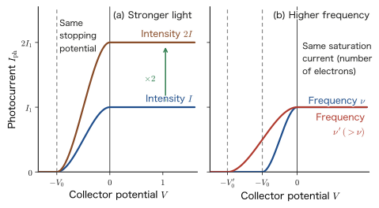
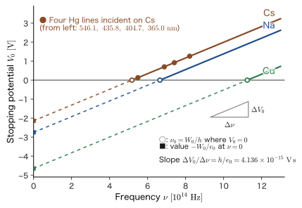

Chapter 4The Particle Nature of Light — The Photoelectric Effect and the Photon
Solar cells convert light into electricity, the sensors of digital cameras convert light into electrical signals, and photoelectron spectroscopy examines the kinds of atoms at the surface of a material and the state of their bonds. All of them are based on a phenomenon in which light gives energy to electrons in matter and sets them in motion—the photoelectric effect. Toward the end of the 19th century, however, this phenomenon could not be explained by the common sense of the physics of the time. Light is an electromagnetic wave, as Maxwell's electromagnetism teaches, and a wave that interferes, as Young's interference experiment (AD 03, “Introductory University Physics,” Chapter 16, Section 16.2) shows. Since the energy of a wave is proportional to the square of its amplitude, brighter light should give more energy to the electrons. What experiments confirmed, however, was a fact contrary to common sense: what decides whether electrons are ejected from a metal is not the brightness of the light but its color (frequency).
In this chapter we unravel this problem step by step, in the order experimental facts → contradiction with the classical wave picture → Einstein's photon hypothesis → formulas. In 1900 Planck explained blackbody radiation by assuming that the energy of an oscillator in the wall of a cavity is limited to integer multiples of $h\nu$ (Chapter 3). In 1905 Einstein extended this “discrete energy” to light itself. Light behaves as a stream of particles (photons), each of which has energy $E=h\nu=\hbar\omega$ and momentum $p=h/\lambda=\hbar k$. These two relations are the doorway into quantum mechanics, which continues in the following chapters with Bohr's atomic model (Chapter 5), Compton scattering and de Broglie's matter waves (Chapter 6), and the Schrödinger equation (Chapter 9).
In the second half (Section 4.5) we see how the same ideas connect with the tools of modern materials science: the Duane–Hunt law, which determines the shortest wavelength of the X-rays emitted from an X-ray tube; photoelectron spectroscopy (XPS/UPS), which measures the energies of electrons in a solid; and the band gap, which limits the efficiency of solar cells. As for the question of how the wave nature and the particle nature of light can be compatible (the apparent contradiction with Young's experiment), we pose it as a question in Section 4.3 and answer it in Chapter 7, together with the electron slit experiment.
- The four experimental facts of the photoelectric effect (the threshold frequency, a photocurrent proportional to the intensity, a maximum kinetic energy independent of the intensity, and the absence of any time delay), and the principle of measurement by the stopping-potential method
- Deriving the intensity of a classical wave, $I=2\pi^2\rho_{\mathrm m}vA^2f^2$, and showing with numbers (about $10^3\ \mathrm{s}$ before an electron comes out) why classical wave theory cannot explain any of the four facts
- Using Einstein's photon hypothesis and the photoelectric equation $h\nu=W_0+K_{\max}$, $e_0V_0=h\nu-W_0$ to explain the four facts, and determining $h$ and the work function $W_0$ from experimental data
- Deriving the Planck–Einstein relations $E=h\nu=\hbar\omega$, $p=h/\lambda=\hbar k$ in two ways, from Maxwell's radiation pressure and from relativity, together with the question “Why does a massless photon have momentum?” Estimating the magnitude of light pressure
- Understanding the Duane–Hunt law $\lambda_{\min}=hc/(e_0V)$, the equation of photoelectron spectroscopy $E_{\mathrm{kin}}=h\nu-E_{\mathrm B}-\phi_{\mathrm{sp}}$, and the relation between solar cells and the band gap $E_{\mathrm g}$ as a balance of photon energy
Source notes: Yasuhide Mochizuki, “Physics Notes: Quantum Mechanics 1,” pp. 5–6, p. 13, and “Physics Notes: Quantum Mechanics 2,” p. 1.
4.1 Experimental Facts of the Photoelectric Effect — Electrons Are Ejected from a Metal When Light Shines on It
4.1.1 Electrons are ejected from a metal when light shines on it
When ultraviolet light shines on a plate of zinc or copper, the free electrons inside the metal are ejected to the outside. The history of the discovery of this phenomenon is intertwined with the discovery of electromagnetic waves. In 1887, in the course of an experiment to detect electromagnetic waves by means of spark discharges, Hertz noticed that sparks jump more easily between the electrodes when ultraviolet light falls on them. In the following year, 1888, Hallwachs showed that when ultraviolet light shines on a negatively charged zinc plate the charge leaks away, whereas it does not leak away from a positively charged plate. In 1899, J. J. Thomson confirmed that the ratio of charge to mass of the particles ejected in this process is the same as that of the electrons in cathode rays (that is, that what is ejected is electrons). Then, in 1902, Lenard measured the energy of the ejected electrons while varying the intensity of the light, and obtained a result that runs counter to common sense: even when the light is made more intense, the energy per electron does not change.
Definition 4.1: The photoelectric effect and photoelectrons
The phenomenon in which electrons are ejected from a substance (in particular, a metal) when light shines on it is called the photoelectric effect. The ejected electrons are called photoelectrons, and the current formed by the flow of photoelectrons is called the photocurrent.
If we depict what happens at the cathode in Figure 4.1 as a single scene, “light strikes and an electron is ejected,” we obtain Figure 4.4 (the picture of the photon hypothesis; Section 4.3). The photoelectric effect is the most basic process in which light transfers energy to the electrons in matter. The case in which electrons are ejected out of the material is called the external photoelectric effect; the case in which, inside a semiconductor, light merely excites electrons and thereby creates electrons and holes that contribute to electrical conduction, while no electrons leave the material, is called the internal photoelectric effect. In this section we deal with the external photoelectric effect (hereafter simply the photoelectric effect); the internal photoelectric effect will be taken up again in Section 4.5, on solar cells.
In the apparatus of Figure 4.1, the basic photoelectric effect experiment is to examine the photocurrent flowing in the circuit, and the potential of the collector $C$, when light shines on the cathode $P$. The quantities that can be measured are (i) the photocurrent when the intensity and frequency (wavelength) of the light are varied, (ii) the change in the photocurrent when the potential $V$ of $C$ is varied, and (iii) the time from when the light is applied until the current flows.
4.1.2 What the experiments revealed — four facts that disagree with common sense
Light is an electromagnetic wave, and the energy of a wave is proportional to its amplitude (as we will see in the following Section 4.1.4, to the square of the amplitude). Therefore it was at first natural to think, “If we shine intense light, correspondingly more electrons will be ejected, and they will come out vigorously, too.” The experimental results, however, defied this prediction. Here “amount of light” and “intensity of light” refer to the energy of light passing through unit area per unit time ($\mathrm{W/m^2}$). The observed facts are the following four.
Observed facts: Four properties of the photoelectric effect
- There is a threshold wavelength. Even if light of wavelength longer than some wavelength $\lambda_0$ ($\lambda\gt\lambda_0$) is shone, no electrons are ejected, no matter how much the amount of light is increased. $\lambda_0$ is a constant determined by the kind of metal, and is called the threshold wavelength. Restated in terms of frequency, no electrons come out with light of $\nu\lt\nu_0=c/\lambda_0$. $\nu_0$ is called the threshold frequency ($\nu$ (nu) is the frequency of the light, and $c$ is the speed of light).
- The photocurrent is proportional to the amount of light. In the range $\lambda\lt\lambda_0$ ($\nu\gt\nu_0$), the amount (intensity) of light and the number of ejected electrons (the photocurrent) are proportional.
- The maximum kinetic energy of the photoelectrons is determined by the frequency alone, not by the intensity of the light. Making the light more intense only increases the number of electrons; the vigor of each individual electron does not change. When the frequency is increased (the wavelength shortened), the electrons are ejected more vigorously (the method of measuring this is in Section 4.1.5).
- There is no time delay. Electrons come out the instant the light is shone. The delay is shorter than the limit that can be measured in the experiment (about $10^{-9}\ \mathrm{s}$). The same is true for weak light.
Facts 1 and 3 flatly contradict the common-sense notion that “the energy of light is determined by the intensity (amplitude) of the light.” What determines the energy given to a photoelectron is not the brightness of the light but its color—its wavelength, or its frequency. Summarized in a single statement, this is as follows.
Caution: This is different from our common sense!
What determines whether electrons come out, and how vigorously they come out, is not the amplitude (brightness) of the light wave but its wavelength or frequency. The brightness determines only the number of ejected electrons. In everyday experience, “intense light has a lot of energy,” but in the photoelectric effect this is not so. We will investigate what is wrong with common sense in Sections 4.2 and 4.3.
4.1.3 The energy of light is proportional to its frequency — $E=h\nu$
Lenard's experiment (1902) showed that the maximum kinetic energy of photoelectrons does not depend on the intensity of the light. What, then, does determine it? Einstein (1905) gave the answer that “the unit of energy that light can hand over to an electron at one time is proportional to the frequency of the light,” and Millikan's precise experiments (1916) confirmed it (Section 4.3.5). Here we state its content in advance as a law. The energy possessed by light—more precisely, the unit of energy that light can hand over to an electron in a single event—is proportional to the frequency of the light. Writing the constant of proportionality as $h$, we have the following relation.
Law 4.1: Energy and frequency of light
The unit of energy of light of frequency $\nu$ is proportional to $\nu$:
\begin{equation} E=h\nu \label{eq:4-hnu} \end{equation}$h$ is the constant of proportionality, called the Planck constant, and $h=6.626\,070\,15\times10^{-34}\ \mathrm{J\,s}$. $\nu$ (nu) is the frequency of the light (the number of waves per second; unit Hz).
A graph verifying $E=h\nu$ experimentally is shown in Figure 4.6 (Section 4.3.5). The letter $h$ is the same constant that Planck introduced when, in order to explain the spectrum of blackbody radiation, he assumed the energy of the oscillators in the wall to be $nh\nu$ ($n=0,1,2,\dots$) (Chapter 3). That the $h$ determined from blackbody radiation experiments and the $h$ determined from photoelectric effect experiments take the same value will be a major success of Einstein's theory, which we see in Section 4.3. The meaning of Eq. \eqref{eq:4-hnu}—why it is a “unit of energy proportional to the frequency,” and how it can be reconciled with the classical idea of waves—will be considered carefully in Sections 4.2–4.3. Here, let us first get a feel for the numbers.
Units: The electron volt (eV) and $hc=1239.84\ \mathrm{eV\,nm}$
Energies on the atomic scale are small numbers when expressed in joules, of order $10^{-19}\ \mathrm{J}$. We therefore take as our unit the kinetic energy gained by one electron (charge $-e_0$; this book denotes the elementary charge by $e_0$, see Chapter 1) when it is accelerated through a potential difference of $1\ \mathrm{V}$. This is the electron volt (symbol eV): $1\ \mathrm{eV}=e_0\times1\ \mathrm{V}=1.602\,176\,634\times10^{-19}\ \mathrm{J}$ (see “Potential Difference and Work” in AD 03, Chapter 36, Section 36.1 (in Japanese)). For light of wavelength $\lambda$ we have $\nu=c/\lambda$, so $E=hc/\lambda$, where the product of the constants is
$$ hc=6.626\,070\,15\times10^{-34}\ \mathrm{J\,s}\times2.997\,924\,58\times10^{8}\ \mathrm{m/s}=1.986\,446\times10^{-25}\ \mathrm{J\,m}=1239.84\ \mathrm{eV\,nm} $$(the conversion used $1\ \mathrm{eV}=1.602\,176\,634\times10^{-19}\ \mathrm{J}$ and $1\ \mathrm{m}=10^9\ \mathrm{nm}$: $1.986\,446\times10^{-25}/1.602\,177\times10^{-19}=1.239\,84\times10^{-6}\ \mathrm{eV\,m}=1239.84\ \mathrm{eV\,nm}$). Therefore, if the wavelength is measured in nm, the energy of the light is obtained from $E\ [\mathrm{eV}]=1239.84/\lambda\ [\mathrm{nm}]$. Red light ($700\ \mathrm{nm}$) has $1.77\ \mathrm{eV}$, green light ($532\ \mathrm{nm}$) has $2.33\ \mathrm{eV}$, blue light ($450\ \mathrm{nm}$) has $2.76\ \mathrm{eV}$, and the ultraviolet light of a mercury lamp ($254\ \mathrm{nm}$) has $4.88\ \mathrm{eV}$. The energy $h\nu$ corresponding to the wavelengths of visible light (from $400\ \mathrm{nm}$ to $700\ \mathrm{nm}$) lies roughly in the range from $1.8\ \mathrm{eV}$ to $3.1\ \mathrm{eV}$.
4.1.4 Energy of a classical wave — intensity is proportional to the square of the amplitude
Let us check with equations the basis of the prediction that “if we make the light more intense, the electrons should fly out more vigorously.” The quantity that expresses the amount of energy a wave carries is the energy passing per second through a unit area (a $1\ \mathrm{m^2}$ surface perpendicular to the direction of propagation of the wave), that is, the intensity of the wave $I$. Its unit is $\mathrm{J/(m^2\,s)}=\mathrm{W/m^2}$. The intensity of a wave was derived in AD 03 (Chapter 11, Section 11.5). Because it is needed for the argument of this chapter, we derive it once more here from the beginning.
Derivation: The intensity of a wave $I=2\pi^2\rho_{\mathrm m}vA^2f^2$
Suppose a wave of amplitude $A$, frequency $f$, and speed $v$ travels through a medium of density (mass per unit volume) $\rho_{\mathrm m}\ [\mathrm{kg/m^3}]$ (the same symbols as in AD 03). When the wave passes, each point of the medium performs simple harmonic motion of amplitude $A$ and angular frequency $\omega=2\pi f$ about its equilibrium position.
Step 1: Vibrational energy of a small portion of mass $m$ (average over one period). A small portion inside a traveling wave carries energy along while exchanging kinetic energy and elastic energy (potential energy) with the neighboring portions. For this reason, it is not necessarily true, as it is for an isolated single oscillator in simple harmonic motion, that “the potential energy is 0 at the equilibrium position.” Averaged over one period, however, the average kinetic energy and the average elastic energy are equal, and both are $\tfrac14m(A\omega)^2$ (the maximum speed is $A\omega$, so this is half of the maximum kinetic energy $\tfrac12m(A\omega)^2$). Therefore, the total energy averaged over one period equals the maximum kinetic energy $\tfrac12m(A\omega)^2$ computed with the maximum speed $A\omega$ (AD 03, Section 11.5):
$$ E_1=\frac12m(A\omega)^2=\frac12m\,A^2(2\pi f)^2=2\pi^2m\,A^2f^2 $$Step 2: Energy per unit volume. The mass of a unit volume ($1\ \mathrm{m^3}$) of the medium is $\rho_{\mathrm m}$, so, letting $m=\rho_{\mathrm m}$, the energy density is
\begin{equation} u=2\pi^2\rho_{\mathrm m}A^2f^2\ \ [\mathrm{J/m^3}] \label{eq:4-energy-density} \end{equation}Step 3: Energy passing through a unit area per second. Since the wave travels at speed $v$, what passes through a cross-sectional area of $1\ \mathrm{m^2}$ in one second is the wave that was contained in a column of base area $1\ \mathrm{m^2}$ and length $v\ \mathrm{m}$, that is, a volume of $v\ \mathrm{m^3}$. The energy in it is the intensity of the wave:
\begin{equation} I=u\,v=2\pi^2\rho_{\mathrm m}\,v\,A^2f^2\ \ [\mathrm{W/m^2}] \label{eq:4-intensity} \end{equation}Dimension check. The units of the right-hand side are $\mathrm{(kg/m^3)\cdot(m/s)\cdot m^2\cdot s^{-2}}=\mathrm{kg/s^3}$, and those of the left-hand side are $\mathrm{J/(m^2\,s)}=\mathrm{kg\,m^2\,s^{-2}/(m^2\,s)}=\mathrm{kg/s^3}$, so they agree. Note that for a traveling wave both $u$ and $I$ are time averages over one period (AD 03, Section 11.5).
∎
Intuition: The energy of an ordinary wave is proportional to the square of the amplitude
What Eq. \eqref{eq:4-intensity} says is that the energy (intensity) of an ordinary wave is proportional to the square of the amplitude. Doubling the amplitude makes the intensity four times as large. In the case of light, we use the amplitude $E_0$ of the electric field in place of the displacement $A$ of the medium, and the intensity becomes $I=\tfrac12\varepsilon_0cE_0^2$ (AD 03, Section 42.5 (in Japanese)). Again it is proportional to the square of the amplitude, and the frequency $\nu$ appears nowhere in the formula. “Making the light more intense” corresponds to “increasing the amplitude $E_0$ of the electric field.” Therefore, in classical theory, for light of any frequency, simply by increasing $E_0$ we should be able to make the energy given to an electron as large as we like.
Example 4.1: Estimating the intensity of a wave
Find the intensity $I$ of a sound wave of frequency $f=1.0\ \mathrm{kHz}$ and amplitude $A=1.0\ \mu\mathrm{m}$ traveling through air (density $\rho_{\mathrm m}=1.2\ \mathrm{kg/m^3}$, speed of sound $v=340\ \mathrm{m/s}$), and convert it to the sound pressure level $L=10\log_{10}(I/I_0)$ ($I_0=10^{-12}\ \mathrm{W/m^2}$). Also, by what factor does the intensity change when $A$ is doubled, and when $f$ is doubled?
Solution. Substitute $A=1.0\times10^{-6}\ \mathrm{m}$ and $f=1.0\times10^{3}\ \mathrm{Hz}$ into Eq. \eqref{eq:4-intensity}. Since $2\pi^2=19.74$,
$$ I=19.74\times1.2\times340\times(1.0\times10^{-6})^2\times(1.0\times10^{3})^2\ \mathrm{W/m^2} =19.74\times1.2\times340\times10^{-12}\times10^{6}=8.05\times10^{-3}\ \mathrm{W/m^2} $$($19.74\times1.2=23.69$, $23.69\times340=8054$). The sound pressure level is $L=10\log_{10}\dfrac{8.05\times10^{-3}}{10^{-12}}=10\log_{10}(8.05\times10^{9})=10\times9.906=99\ \mathrm{dB}$, which corresponds to a loud sound such as that heard right next to a construction site (even though $1\ \mu\mathrm{m}$ is a very small amplitude, it carries this much energy). Since $I\propto A^2f^2$ by Eq. \eqref{eq:4-intensity}, $A\to2A$ gives $I\to4I$ (four times), and $f\to2f$ also gives $I\to4I$ (four times). If both are doubled, the intensity becomes 16 times as large.
Here we should distinguish two kinds of “energy of light.” The intensity $I$ of a wave is the total energy passing through a unit area per second ($\mathrm{W/m^2}$), and in classical theory it is proportional to the square of the amplitude (and to $f^2$). On the other hand, $E=h\nu$ in Law 4.1 is the unit of energy that light can hand over to a single electron at one time ($\mathrm{J}$), and it is proportional to the first power of $\nu$. What connects the two is $I=\Phi h\nu$ in Section 4.3.1 ($\Phi$: the number of photons passing through a unit area per second). Also, the $f$ of this section and the $\nu$ of light are the same frequency (in this book, the frequency of waves in general is written $f$, and the frequency of light is written $\nu$).
4.1.5 The stopping-potential method — measuring the energy of photoelectrons
We want to know the energy that the photoelectrons carry off. Measuring the kinetic energy of an electron directly is difficult, but there is a simple method: apply a voltage in the direction that pushes the electrons back, and look for the voltage at which the current becomes 0. In the apparatus of Figure 4.1, let us denote by $V$ the potential of the collector $C$ measured relative to the cathode $P$. $V\gt0$ is the direction that attracts electrons (acceleration), and $V\lt0$ is the direction that pushes electrons back (deceleration).
In this book, $K$ denotes only the kinetic energy of an electron ($K_{\max}$ is its maximum value). Let us find the work that the electrostatic force does on an electron that left the cathode with kinetic energy $K$, by the time it reaches the collector. When an electron of charge $q=-e_0$ moves from a point of potential $0$ (the cathode) to a point of potential $V$ (the collector), the work done by the electrostatic force is $q\,(0-V)=e_0V$ (AD 03, Section 36.1 (in Japanese)). From the relation between work and kinetic energy (AD 03, Chapter 4, Section 4.2), the kinetic energy on arrival at the collector is $K+e_0V$. If $V\gt0$, the electron is accelerated; if $V=-V_0\ (V_0\gt0)$, the electron loses kinetic energy $e_0V_0$. Therefore, only electrons with $K\ge e_0V_0$ reach the collector. At the voltage $V=-V_0$ at which no electron reaches it any longer, the kinetic energy $K_{\max}$ of the most energetic electron is exactly equal to $e_0V_0$, so that
\begin{equation} K_{\max}=e_0V_0 \label{eq:4-kmax-v0} \end{equation}holds. This $V_0$ is called the stopping potential. If we measure the stopping potential, the maximum kinetic energy of the photoelectrons can be read off directly in units of electron volts: for example, if $V_0=0.70\ \mathrm{V}$, then $K_{\max}=0.70\ \mathrm{eV}$.

Figure 4.2 shows the photocurrent that is measured. (a) When the amount of light is doubled, the saturation current, at which all the electrons reach the collector at positive potential, doubles (Fact 2). However, the stopping potential at which the current becomes 0 does not change (Fact 3). In other words, making the light more intense merely increases the number of electrons emitted, while the maximum kinetic energy of a single electron does not change. (b) When the frequency is raised, the magnitude of the stopping potential increases (Fact 3). None of these four facts can be derived from the intensity of a classical wave, Eq. \eqref{eq:4-intensity}. We will confirm this in the next section.
4.2 Contradiction with the Classical Wave Picture
4.2.1 What should happen if light is a wave
In Section 4.1 we summarized the experimental fact that the unit of the energy of light is $h\nu$ and is determined by the frequency, not by the intensity (amplitude) of the light. However, when we try to fit this fact into the classical wave picture, a contradiction arises. If light is a Maxwell electromagnetic wave and its energy is given by Eq. \eqref{eq:4-intensity} or by $I=\tfrac12\varepsilon_0cE_0^2$, we are led to the following predictions.
Contradiction: The two predictions of classical wave theory and the observed facts
Fact 1 of Section 4.1: For light whose wavelength is longer than a certain wavelength $\lambda_0$, no electrons are emitted no matter how much the amount of light is increased.
Prediction A (the commonsense view): Light is a wave → making the light more intense increases the amplitude → the energy of the light increases ($I\propto E_0^2$) → even if the wavelength is long, sufficiently intense light should have enough energy to eject electrons.
Prediction B (assuming that the energy of the fundamental wave is $h\nu$): Light is a wave → suppose that the energy of one fundamental wave is $h\nu$ → if we increase the amount of light, waves can be superposed → the total energy is $E=\sum h\nu=Nh\nu$ ($N$ is the number of superposed waves), so by making $N$ large, $E$ should become arbitrarily large.
Neither prediction agrees with the observed facts. How can this contradiction be explained?
Prediction A and Prediction B look different, but they rest on the same premise: that an electron can absorb the energy carried by the wave continuously and store as much of it as it likes. If there are many waves, or if the amplitude is large, the energy stored by the electron becomes large and eventually exceeds the energy needed to escape from the metal. Fact 1 shows that this premise is wrong.
4.2.2 Comparing the predictions of classical theory with observation
Let us compare the four facts with the predictions of classical theory (Table 4.1, Figure 4.3).
| When the condition of the light is changed | Prediction of classical wave theory | Fact observed in experiments |
|---|---|---|
| Make the light more intense ($\nu$ constant) | The kinetic energy of the electrons increases | The maximum kinetic energy does not change; the number of electrons increases |
| Lower the frequency (intense light applied) | With intense light, electrons are emitted at any frequency | Below the threshold frequency $\nu_0$, no electrons are emitted no matter how intense the light is |
| Raise the frequency (intensity constant) | Determined by the intensity (amplitude). There is no reason why the electron energy should increase as the frequency becomes higher ($\nu$ does not appear in $I=\tfrac12\varepsilon_0cE_0^2$) | The maximum kinetic energy increases (linearly) with the frequency |
| Time until electrons are emitted | With weak light, one must wait a long time until the energy accumulates (about $10^{3}\ \mathrm{s}$) | No delay (shorter than $10^{-9}\ \mathrm{s}$) |
In the following example, let us check the value “about $10^{3}\ \mathrm{s}$” in the last row of the table.
Example 4.2: Estimating the classical delay time
A weak light of intensity $I=1.0\times10^{-2}\ \mathrm{W/m^2}$ is incident on a metal with work function $W_0=2.0\ \mathrm{eV}$. Assume that the light is a “wave” and that its energy flows in continuously. Assuming that all the light energy striking a single atom (radius $0.1\ \mathrm{nm}$) is collected by a single electron, estimate the time until the electron has stored an energy equal to $W_0$ and can escape. Also, what light intensity is required for this time to be $10^{-9}\ \mathrm{s}$?
Solution. The cross-sectional area of an atom is $S=\pi(0.1\ \mathrm{nm})^2=\pi\times(1.0\times10^{-10}\ \mathrm{m})^2=3.14\times10^{-20}\ \mathrm{m^2}$. The power of the light reaching this area is obtained by multiplying the intensity (power per unit area) by the area:
$$ P=IS=(1.0\times10^{-2}\ \mathrm{W/m^2})(3.14\times10^{-20}\ \mathrm{m^2})=3.14\times10^{-22}\ \mathrm{W} $$Since the work function is $W_0=2.0\ \mathrm{eV}=2.0\times1.602\times10^{-19}\ \mathrm{J}=3.20\times10^{-19}\ \mathrm{J}$, the time required to store this much energy is
$$ t=\frac{W_0}{P}=\frac{3.20\times10^{-19}\ \mathrm{J}}{3.14\times10^{-22}\ \mathrm{W}}=1.02\times10^{3}\ \mathrm{s}\approx17\ \text{min} $$In experiments, electrons are emitted at the instant the light is applied (in a time shorter than $10^{-9}\ \mathrm{s}$), so the classical wave picture is off by a factor of $10^{12}$. To make the delay $10^{-9}\ \mathrm{s}$, the same estimate requires light with $I=W_0/(St)=3.20\times10^{-19}/(3.14\times10^{-20}\times10^{-9})=1.0\times10^{10}\ \mathrm{W/m^2}$, that is, light as intense as that of a focused laser. That electrons are emitted immediately with the light of an ordinary mercury lamp cannot be explained by the accumulation of the energy of a classical wave. (This estimate is crude in that it assumes that the electron collects light only from the cross-sectional area of a single atom, but no matter how generously we estimate, the discrepancy of a factor of $10^{12}$ does not go away.)
Question: When and how does an electron receive energy?
Considering Fact 1 (threshold wavelength) and Fact 4 (no delay) together, it appears that the electron receives, from the light, a lump of energy all at once and instantaneously. If the size of this lump is determined not by the intensity of the light but by its frequency (Fact 3), the facts can be explained in a straightforward way. Einstein's photon hypothesis in the next section is the idea of “particles of light” that carry such a lump of energy.
4.3 Einstein's Photon Hypothesis — The Work Function and the Photoelectric Equation
4.3.1 The light-quantum hypothesis — thinking of light as a collection of particles
To explain the contradictions found in Section 4.2, Einstein proposed in 1905 the light-quantum hypothesis (photon hypothesis), which regards light as particles. In Planck's theory (Chapter 3), what became “discrete” was the energy $nh\nu$ of the oscillators in the walls of the cavity. The light itself propagating through space remained Maxwell's wave. Einstein went one step further and considered that light itself is a collection of particles, each carrying energy $h\nu$.
Hypothesis 4.1: The light-quantum hypothesis (Einstein, 1905)
Light of frequency $\nu$ exchanges energy with matter as a stream of particles—light quanta (later called photons)—each carrying energy $h\nu$.
- The intensity of light is determined by the number of photons passing through unit area per unit time (the photon flux) $\Phi\ [\mathrm{m^{-2}\,s^{-1}}]$, and $I=\Phi\,h\nu$. Making light more intense means increasing the number of photons; the energy of a single photon does not change.
- A photon cannot be divided. When a photon is absorbed, a single photon hands over all of its energy $h\nu$ to a single electron (the process in which a photon is scattered and hands over only part of its energy is treated in Chapter 6, under Compton scattering). The energies of several photons are never accumulated in a single electron (for the exception in the case of extremely intense light, see Exercise 4.8).
The name “photon” was proposed in 1926 by G. N. Lewis; Einstein himself called it a light quantum (Lichtquant). In this book we will write “photon” from now on. The energy of a single photon is very small, of order $10^{-19}\ \mathrm{J}$ (a few eV for visible light), so, for example, sunlight in a sunny place contains as many as about $3\times10^{21}$ photons per square meter per second (Exercise 4.3). This is why light looks like a continuous wave.
Question: Why is light that shows interference a particle?
When we say that light behaves like particles, we worry about the contradiction with Young's experiment (AD 03, Section 16.2). Light passing through a double slit produces bright and dark fringes. The fringes are explained by the superposition of the waves that passed through the two slits (they reinforce each other where the path difference is an integer multiple of the wavelength and cancel where it is a half-integer multiple). If light were made only of bullet-like particles, there would be just two bright bands behind the two slits, and no fringes should form. At first sight, then, light would have to have contradictory properties: it would be both a wave and a particle.
The answer to this question will be examined in detail in Chapter 7, using the slit experiment with electrons. Here we only state the starting point of the answer. (1) What the photoelectric effect tells us is that the unit in which light hands over energy to matter (is absorbed) is $h\nu$. (2) The interference and diffraction that occur when light propagates through space are described in the language of waves (amplitude and phase). (3) The probability of finding photons one by one at a given position on a detector is proportional to the intensity of the wave (the square of the amplitude). Even if the light is so weak that the photons arrive only one at a time, if we keep catching photons for a long time, interference fringes eventually appear. This idea—“the intensity of the wave represents the probability of finding a particle”—leads to the Born interpretation (Chapter 8). Einstein himself stated in a lecture in 1909 that the theory of light would become one that fuses the properties of both waves and particles.
Now, if we think of light as “a collection of particles carrying energy,” then in the photoelectric effect we need to consider neither the superposition of waves nor the amplitude of waves. All we consider is a one-to-one encounter of a single photon with a single electron. Since we consider that the process in which “the energies of many photons are added up and gathered in a single electron” does not occur, Prediction B of Section 4.2 ($E=\sum h\nu$) does not hold. Also, the “intensity,” which in Prediction A was proportional to the square of the amplitude, is replaced by the number of photons ($\Phi$ in $I=\Phi h\nu$). Next, in Section 4.3.2, we introduce the energy that an electron needs in order to leave the metal and express this idea in formulas.
4.3.2 The work function — the energy needed for an electron to leave the metal
An electron inside a metal (a free electron) can move freely within the metal, but it cannot easily get out of it. This is because it is attracted by the positive charges (ions) that make up the metal lattice, and some minimum energy is needed to break free of that binding. This energy is called the work function.
Definition 4.2: The work function and the threshold frequency
The minimum energy required to extract a single electron from a metal (to cause the photoelectric effect) is called the work function $W_0$ of that metal. Letting $\nu_0$ be the corresponding frequency of light, we write
\begin{equation} W_0=h\nu_0 \label{eq:4-workfunction} \end{equation}Here $\nu_0=W_0/h$ is the threshold frequency, and $\lambda_0=c/\nu_0=hc/W_0$ is the threshold wavelength.
The value of the work function is determined by the kind of metal and lies roughly in the range from $2\ \mathrm{eV}$ to $6\ \mathrm{eV}$ (Table 4.2). The alkali metals (Cs, K, Na) have small values, so the photoelectric effect occurs even with visible light. Cu, Au, Pt, and so on have large values and require ultraviolet light. (The values in the table are typical values; they change by about $0.1$–$0.5\ \mathrm{eV}$ depending on the crystal face and on contamination of the surface.)
| Metal | $W_0\ [\mathrm{eV}]$ | $\lambda_0\ [\mathrm{nm}]$ | $\nu_0\ [10^{14}\ \mathrm{Hz}]$ | Color of light |
|---|---|---|---|---|
| Cs | 2.14 | 579.4 | 5.17 | Up to yellow |
| K | 2.30 | 539.1 | 5.56 | Up to green |
| Na | 2.75 | 450.9 | 6.65 | Up to blue |
| Al | 4.08 | 303.9 | 9.87 | Ultraviolet |
| Cu | 4.65 | 266.6 | 11.24 | Ultraviolet |
| Au | 5.1 | 243.1 | 12.33 | Ultraviolet |
| Pt | 5.65 | 219.4 | 13.66 | Ultraviolet |
Comparing the energy $h\nu$ of a single photon with the work function $W_0$, we distinguish the following two cases.
Case analysis: Photon energy and the work function
- When $h\nu\lt W_0$ ($\nu\lt\nu_0$): The energy of a single photon is smaller than the work function. The electron cannot escape the binding by the positive charges of the metal lattice. However intense the light is (however many photons there are), the energies of different photons are not added together, so no electron is emitted (Fact 1).
- When $h\nu\gt W_0$ ($\nu\gt\nu_0$): The energy of a single photon is larger than the work function. The electron becomes free of the binding by the positive charges and flies out. The surplus energy becomes the kinetic energy of the electron.
In this way, if we regard light as “a collection of particles carrying energy,” the contradictions that could not be explained by classical wave theory can be explained. Figure 4.4 shows three cases: weak blue light, intense blue light, and intense red light.
4.3.3 Einstein's photoelectric equation
Let us use energy conservation to write an equation for the situation in which one photon is absorbed by one electron in a metal.
Derivation: Einstein's photoelectric equation
Step 1: An electron at the Fermi level. The electrons in a metal fill the states in order from the lowest energy upward (for details, see AD 03, Section 52.8 (in Japanese), and “Solid-State Physics,” AD 06). The highest energy level occupied by electrons is called the Fermi level $E_{\mathrm F}$. The energy required to take an electron from the Fermi level and bring it to rest in vacuum is the work function $W_0$ (Figure 4.5). When this electron absorbs one photon (energy $h\nu$), energy conservation gives
$$ h\nu=W_0+K $$Here the left-hand side is the absorbed energy, the first term on the right-hand side is the energy used to escape from the metal, and the second term is the kinetic energy $K$ of the electron when it emerges into vacuum.
Step 2: Electrons deeper down. An electron at an energy level lower than the Fermi level by $\delta\ (\ge0)$ requires an energy $W_0+\delta$ to be taken out. Therefore $h\nu=W_0+\delta+K$, that is, $K=h\nu-W_0-\delta\le h\nu-W_0$. In addition, an electron that loses energy by colliding with other electrons or with the lattice on its way from the interior of the metal to the surface also ends up with a smaller $K$. In this way, the kinetic energies of the photoelectrons are distributed between 0 and a maximum value, and this maximum is attained when an electron at the Fermi level emerges without losing energy along the way.
Step 3: The maximum value. From the above, the maximum kinetic energy is $K_{\max}=h\nu-W_0$.
∎
Law 4.2: Einstein's photoelectric equation
When light of frequency $\nu$ is shone on a metal, the maximum value $K_{\max}$ of the kinetic energy of the photoelectrons is given by
\begin{equation} h\nu=W_0+K_{\max}\qquad(K_{\max}=h\nu-W_0\ \ge0) \label{eq:4-einstein} \end{equation}If $h\nu\lt W_0$, no photoelectrons are emitted. Using the stopping potential $V_0$ (Eq. \eqref{eq:4-kmax-v0}), we obtain
\begin{equation} e_0V_0=h\nu-W_0\qquad\text{that is}\qquad V_0=\frac{h}{e_0}\,\nu-\frac{W_0}{e_0} \label{eq:4-stopping} \end{equation}$V_0$ is a linear function of $\nu$; the slope of the line is $h/e_0$, independent of the material, and the intercept is $-W_0/e_0$.
Caution: $K_{\max}$ is the “maximum value,” and in an actual measurement the intercept is the work function of the collector
(1) Eq. \eqref{eq:4-einstein} gives the maximum kinetic energy of the photoelectrons. As in Step 2 of the derivation, the kinetic energy of an electron coming out from inside the metal is smaller than this (the energies are distributed). What the stopping potential measures is that maximum.
(2) In an actual experiment, if the cathode $P$ and the collector $C$ are different metals, then because of the difference of their work functions (the contact potential difference), a gain or loss of kinetic energy of $e_0\times$(contact potential difference) is added while an electron travels from $P$ to $C$. For this reason, the intercept in Eq. \eqref{eq:4-stopping} is determined not by the cathode but by the work function of the collector. The slope $h/e_0$ is not affected by the contact potential difference. Millikan's experiment (Section 4.3.5) was carried out with this point in mind. In this chapter we treat the ideal case in which the two electrodes have the same work function.
Example 4.3: The photoelectric effect of Na
For Na ($W_0=2.75\ \mathrm{eV}$): (a) Find the threshold wavelength and the threshold frequency. (b) Find the maximum kinetic energy of the photoelectrons, the stopping potential, and the maximum speed when light of wavelength $405\ \mathrm{nm}$ is shone on it. (c) If the intensity of light of wavelength $546\ \mathrm{nm}$ is increased by a factor of $10^6$, will electrons be emitted?
Solution. (a) $\lambda_0=\dfrac{hc}{W_0}=\dfrac{1239.84\ \mathrm{eV\,nm}}{2.75\ \mathrm{eV}}=450.9\ \mathrm{nm}$. $\nu_0=\dfrac{W_0}{h}=\dfrac{2.75\times1.602\times10^{-19}\ \mathrm{J}}{6.626\times10^{-34}\ \mathrm{J\,s}}=6.65\times10^{14}\ \mathrm{Hz}$ (checking with $=c/\lambda_0$, we get $2.998\times10^8/(450.9\times10^{-9})=6.65\times10^{14}\ \mathrm{Hz}$, which agrees).
(b) The energy of one photon is $h\nu=\dfrac{1239.84}{405}\ \mathrm{eV}=3.061\ \mathrm{eV}$. This is larger than $W_0=2.75\ \mathrm{eV}$, so electrons are emitted. From Eq. \eqref{eq:4-einstein}, $K_{\max}=3.061-2.75=0.31\ \mathrm{eV}$ ($=0.311\times1.602\times10^{-19}\ \mathrm{J}=4.99\times10^{-20}\ \mathrm{J}$). From Eq. \eqref{eq:4-stopping}, the stopping potential is $V_0=K_{\max}/e_0=0.31\ \mathrm{V}$. For the maximum speed, from $\tfrac12m_{\mathrm e}v^2=K_{\max}$ we obtain $v=\sqrt{2K_{\max}/m_{\mathrm e}}=\sqrt{2\times4.99\times10^{-20}/(9.109\times10^{-31})}\ \mathrm{m/s}=3.3\times10^{5}\ \mathrm{m/s}$ (this is about 0.1% of the speed of light, so the nonrelativistic expression is adequate).
(c) The energy of a $546\ \mathrm{nm}$ photon is $1239.84/546=2.27\ \mathrm{eV}$, which is smaller than $W_0=2.75\ \mathrm{eV}$. One photon acts on only one electron, and energy is not accumulated, so even if the intensity is increased by a factor of $10^6$ (even if the number of photons is increased by a factor of $10^6$), electrons are not emitted. According to Prediction A of classical theory, they should have been emitted.
4.3.4 Explaining the four facts by the photon hypothesis
With the photoelectric equation \eqref{eq:4-einstein} and the idea of the photon (Hypothesis 4.1), the four facts of Section 4.1 are all explained as follows (Table 4.3).
| Fact | Explanation by the photon hypothesis |
|---|---|
| 1. There is a threshold wavelength $\lambda_0$ | If the energy $h\nu$ of one photon is smaller than $W_0$, an electron cannot escape from a single photon alone. No matter how many photons are shone on it, their energies are not added together. The threshold is $h\nu_0=W_0$, $\lambda_0=hc/W_0$ |
| 2. The photocurrent is proportional to the amount of light | The intensity of light $I=\Phi h\nu$ is proportional to the photon flux $\Phi$. If the probability that one photon ejects one electron (the quantum efficiency) is $\eta$, the number of electrons ejected per second is $\eta\Phi S$ ($S$ is the illuminated area), which is proportional to $I$ |
| 3. $K_{\max}$ is determined by $\nu$ alone, independent of the intensity | The intensity $I$ (the number of photons) does not appear in $K_{\max}=h\nu-W_0$. The energy that one electron receives is only the $h\nu$ of one photon. It increases in proportion to $\nu$ |
| 4. There is no time delay | One photon hands over all of its energy to one electron instantly. No time is needed to accumulate energy. Even if the light is weak and the photons are sparse, an electron is emitted at the moment a photon strikes |
The quantum efficiency $\eta$ in Fact 2 is small for metals, about $10^{-4}$–$10^{-3}$. This is because most of the incident photons are reflected at the metal surface, or merely excite electrons and are converted into heat inside the metal. In the next example, let us estimate the magnitude of the photocurrent.
Example 4.4: Photocurrent and the intensity of light
Laser light of wavelength $405\ \mathrm{nm}$ and power $1.0\ \mathrm{mW}$ is shone on a phototube with quantum efficiency $\eta=0.1\ \%$ (the cathode is the Na of Example 4.3). Find the number of photons striking it per second and the photocurrent. What happens to the photocurrent if the intensity of the light is doubled?
Solution. The energy of one photon is $h\nu=hc/\lambda=1239.84/405=3.061\ \mathrm{eV}=3.061\times1.602\times10^{-19}\ \mathrm{J}=4.905\times10^{-19}\ \mathrm{J}$. The number of photons striking per second is obtained by dividing the power by the energy of one photon:
$$ N=\frac{P}{h\nu}=\frac{1.0\times10^{-3}\ \mathrm{W}}{4.905\times10^{-19}\ \mathrm{J}}=2.04\times10^{15}\ \mathrm{s^{-1}} $$Since the quantum efficiency is $0.1\ \%$, the number of electrons ejected per second is $\eta N=2.04\times10^{12}\ \mathrm{s^{-1}}$. The current is the number of electrons times the elementary charge: $I_{\mathrm{ph}}=e_0\eta N=(1.602\times10^{-19}\ \mathrm{C})(2.04\times10^{12}\ \mathrm{s^{-1}})=3.3\times10^{-7}\ \mathrm{A}=0.33\ \mu\mathrm{A}$. If the intensity (power) of the light is doubled, the number of photons $N$ doubles, and the photocurrent also doubles, to $0.65\ \mu\mathrm{A}$. In this case, the energy of one photoelectron, $K_{\max}=0.31\ \mathrm{eV}$, does not change (Fact 2 and Fact 3). In classical theory, doubling the intensity of the light should have increased the energy of the photoelectrons.
4.3.5 Millikan's experiment — determining $h$ from the photoelectric effect
Einstein's equation \eqref{eq:4-stopping} makes a clearly testable prediction: the stopping potential $V_0$ is a linear function of the frequency $\nu$, and its slope $h/e_0$ is independent of the material. In 1905 there was no experiment precise enough to confirm this prediction (Lenard's measurements showed that the energy is independent of the intensity, but did not investigate the dependence on $\nu$ quantitatively).
It was Millikan who carried out this test. Starting around 1912, Millikan spent several years on it. Inside a vacuum tube, he scraped the surface of alkali metals (Na, Li, and others) with a rotating knife to make a clean surface, selected the wavelength by dispersing the light of a mercury lamp, and measured the stopping potential. The result, as in Figure 4.6, was that $V_0$ and $\nu$ lie on a straight line, and the $h$ determined from the slope was about $6.57\times10^{-34}\ \mathrm{J\,s}$ (to an accuracy of about 0.5%) (Millikan, 1916). This nearly agrees with the value that Planck obtained from blackbody radiation ($6.55\times10^{-34}\ \mathrm{J\,s}$). The fact that $h$ determined from entirely different phenomena has the same value shows that $h$ is a fundamental constant of nature, and that the photoelectric effect and blackbody radiation arise from the same quantum property. Incidentally, it is said that Millikan himself, while acknowledging that Einstein's equation agrees exactly with experiment, remained skeptical of the light-quantum hypothesis itself for a long time.

Example 4.5: Determining $h$ and $W_0$ from stopping-potential data
The four lines of a mercury lamp were shone on a Cs cathode and the stopping potential was measured, giving the values in the following table (illustrative values). Fit a straight line $V_0=a\nu+b$ by the method of least squares, and find $h$, $W_0$, and the threshold wavelength $\lambda_0$.
| Wavelength $\lambda\ [\mathrm{nm}]$ | 546.1 | 435.8 | 404.7 | 365.0 |
|---|---|---|---|---|
| Frequency $\nu\ [10^{14}\ \mathrm{Hz}]$ | 5.490 | 6.879 | 7.408 | 8.213 |
| Stopping potential $V_0\ [\mathrm{V}]$ | 0.13 | 0.70 | 0.92 | 1.26 |
Solution. We find the frequencies from $\nu=c/\lambda$: $2.998\times10^{8}/(546.1\times10^{-9})=5.490\times10^{14}\ \mathrm{Hz}$; similarly, $435.8\ \mathrm{nm}$ gives $6.879\times10^{14}\ \mathrm{Hz}$, $404.7\ \mathrm{nm}$ gives $7.408\times10^{14}\ \mathrm{Hz}$, and $365.0\ \mathrm{nm}$ gives $8.213\times10^{14}\ \mathrm{Hz}$. Let $x=\nu/(10^{14}\ \mathrm{Hz})$ and $y=V_0/\mathrm{V}$. The averages are $\bar x=(5.490+6.879+7.408+8.213)/4=6.9975$ and $\bar y=(0.13+0.70+0.92+1.26)/4=0.7525$. The deviations, the products of the deviations, and the squares of the deviations are as follows.
$$ \begin{array}{c|cccc|c} i & 1 & 2 & 3 & 4 & \text{sum}\\ \hline x_i & 5.490 & 6.879 & 7.408 & 8.213 & \\ y_i & 0.13 & 0.70 & 0.92 & 1.26 & \\ x_i-\bar x & -1.5075 & -0.1185 & 0.4105 & 1.2155 & 0 \\ y_i-\bar y & -0.6225 & -0.0525 & 0.1675 & 0.5075 & 0 \\ (x_i-\bar x)(y_i-\bar y) & 0.9384 & 0.0062 & 0.0688 & 0.6169 & 1.6303 \\ (x_i-\bar x)^2 & 2.2726 & 0.0140 & 0.1685 & 1.4774 & 3.9325 \end{array} $$Therefore the sum of the products of the deviations is $S_{xy}=\sum(x_i-\bar x)(y_i-\bar y)=1.6303$, and the sum of the squared deviations is $S_{xx}=\sum(x_i-\bar x)^2=3.9325$. The slope and intercept of the least-squares line are $a=S_{xy}/S_{xx}=1.6303/3.9325=0.4146$ and $b=\bar y-a\bar x=0.7525-0.4146\times6.9975=-2.148$. Since the slope is $a=0.4146\ \mathrm{V}/(10^{14}\ \mathrm{Hz})=4.146\times10^{-15}\ \mathrm{V\,s}$, setting it equal to the slope $h/e_0$ in Eq. \eqref{eq:4-stopping} gives
$$ h=e_0a=(1.602\times10^{-19}\ \mathrm{C})(4.146\times10^{-15}\ \mathrm{V\,s})=6.64\times10^{-34}\ \mathrm{J\,s} $$Since the intercept is $-W_0/e_0$, we have $W_0=-e_0b=2.15\ \mathrm{eV}$ (multiplying the intercept $-2.148\ \mathrm{V}$ by the elementary charge gives the energy in units of eV). The threshold frequency is the value at which $V_0=0$, namely $\nu_0=-b/a=2.148/0.4146\times10^{14}\ \mathrm{Hz}=5.18\times10^{14}\ \mathrm{Hz}$, and the threshold wavelength is $\lambda_0=c/\nu_0=2.998\times10^8/(5.18\times10^{14})\ \mathrm{m}=578.5\ \mathrm{nm}$. These agree with the true values ($h=6.626\times10^{-34}\ \mathrm{J\,s}$, $W_0=2.14\ \mathrm{eV}$, $\lambda_0=579.4\ \mathrm{nm}$) with differences of $0.2\ \%$ for $h$ and $0.4\ \%$ for $W_0$ (the error comes from rounding $V_0$ to the $0.01\ \mathrm{V}$ digit).
4.3.6 Why did Einstein propose this hypothesis?
Here one question remains about the photon hypothesis. At that time, the only experiments that directly supported the photon hypothesis were a very limited set of phenomena such as the photoelectric effect, and there was no way to explain the wave phenomena of interference and diffraction. Why, then, did Einstein put forward such a bold idea as “light is a collection of particles” in his 1905 paper? To state the conclusion first, Einstein did not propose this hypothesis blindly. His starting point was not the photoelectric effect but the thermodynamics of blackbody radiation (Section 3.4.8 of Chapter 3). The title of the paper is “On a Heuristic Point of View Concerning the Production and Transformation of Light,” and the photoelectric effect appears in the second half as one application that supports this way of thinking.
Key point: Radiation in the Wien region has the same volume dependence as an ideal gas of particles
The derivation was carried out in Chapter 3, Section 3.4 (Section 3.4.8), so here we state only the outline and the conclusion. On the high-frequency side ($h\nu\gg k_{\mathrm B}T$, the Wien region), the spectral energy density is approximated by Wien's formula $U(\nu)=A\nu^3e^{-h\nu/k_{\mathrm B}T}$ ($A=8\pi h/c^3$). Let $E=U\,V\,\dd\nu$ be the energy of radiation confined in a cavity of volume $V$, with frequency in a narrow interval of width $\dd\nu$ near $\nu$. Solving this expression for $1/T$ and integrating the thermodynamic relation $\partial S/\partial E=1/T$ from $E=0$ gives the entropy $S(E,V)$. When the energy $E$ and the frequency $\nu$ are held constant and the volume is changed from $V_0$ to $V$, the change in entropy is
\begin{equation} S(V)-S(V_0)=\frac{k_{\mathrm B}E}{h\nu}\ln\frac{V}{V_0} \label{eq:4-entropy-radiation} \end{equation}On the other hand, when $N$ mutually independent particles move freely in a container of volume $V$, the probability that all of them are found in a part of volume $V_0\ (\lt V)$ is $(V_0/V)^N$. By Boltzmann's principle $S=k_{\mathrm B}\ln W$ (AD 03, Chapter 49 (in Japanese)), the difference between the entropies of the state of volume $V$ and the state of volume $V_0$, that is, the entropy change when the volume of an ideal gas is expanded from $V_0$ to $V$, is $k_{\mathrm B}\ln(V/V_0)^N=k_{\mathrm B}N\ln(V/V_0)$ (in the same direction as in Section 3.4.8 of Chapter 3). Comparing with Eq. \eqref{eq:4-entropy-radiation}, we find that the two agree exactly when $N=E/(h\nu)$.
That is, monochromatic radiation in the Wien region behaves, thermodynamically, just like an ideal gas of $N=E/(h\nu)$ independent particles, each with energy $h\nu$. Einstein did not regard this agreement as a coincidence; he concluded that light (at least in the Wien region) is a collection of particles of energy $h\nu$, the light quanta. The photoelectric effect is an application of this conclusion, and the hypothesis was not proposed blindly.
In his 1905 paper, Einstein listed, besides the photoelectric effect, two phenomena that this way of thinking leads one to expect: photoluminescence (a phenomenon in which a substance absorbs light and emits other light; according to Stokes' law, the frequency of the emitted light is lower than that of the incident light) and the ionization of gases by ultraviolet light. The light-quantum hypothesis was not accepted for a long time by many physicists of the day (including Planck and Bohr, who later created an atomic model), because the wave properties of light (interference and diffraction) were all too well established. The hypothesis came to be widely accepted only after Compton showed, in 1923, evidence that a photon collides with an electron as a particle carrying momentum (Section 4.4, Chapter 6). Einstein received the 1921 Nobel Prize in Physics “for his services to theoretical physics, and especially for his discovery of the law of the photoelectric effect.” Millikan received the 1923 Nobel Prize in Physics for his work on the elementary charge and on the photoelectric effect.
4.4 Energy and Momentum of the Photon — The Planck–Einstein Relation
4.4.1 The Planck–Einstein relation — the equations connecting photons and electromagnetic waves
Let us summarize the relations that connect a photon (subscript ph) and the corresponding electromagnetic wave (subscript em). The left-hand sides are properties of the photon (energy $E$, momentum $p$), and the right-hand sides are properties of the electromagnetic wave (frequency $\nu$, wavelength $\lambda$, angular frequency $\omega$, wavenumber $k$).
Law 4.3: The Planck–Einstein relation
The energy and the magnitude of the momentum of the photon corresponding to an electromagnetic wave of frequency $\nu_{\mathrm{em}}$ and wavelength $\lambda_{\mathrm{em}}$ are given by
\begin{equation} E_{\mathrm{ph}}=h\nu_{\mathrm{em}}=\hbar\omega_{\mathrm{em}} \label{eq:4-pe-energy} \end{equation} \begin{equation} p_{\mathrm{ph}}=\frac{h\nu_{\mathrm{em}}}{c}=\frac{h}{\lambda_{\mathrm{em}}}=\hbar k_{\mathrm{em}} \label{eq:4-pe-momentum} \end{equation}Here $\omega_{\mathrm{em}}=2\pi\nu_{\mathrm{em}}$ (angular frequency), $\hbar=h/2\pi$, and $k_{\mathrm{em}}=2\pi/\lambda_{\mathrm{em}}$ (wavenumber); $k_{\mathrm{em}}=\lvert\bm{k}_{\mathrm{em}}\rvert$ is the magnitude of the wavevector $\bm{k}_{\mathrm{em}}$ (whose direction is the direction in which the wave propagates). The momentum of the photon can be written as a vector, $\bm{p}_{\mathrm{ph}}=\hbar\bm{k}_{\mathrm{em}}$.
Below, when there is no risk of confusion, we omit the subscripts ph and em and write $E=h\nu=\hbar\omega$, $p=h/\lambda=\hbar k$. Let us check the symbols that newly appear.
- $\hbar$ (h-bar) is $h/2\pi$, with $\hbar=1.054\,571\,817\ldots\times10^{-34}\ \mathrm{J\,s}=6.582\,119\,569\ldots\times10^{-16}\ \mathrm{eV\,s}$. In quantum mechanics, equations look cleaner with $\hbar$ than with $h$, so from here on we use $\hbar$ frequently. Do not confuse $h$ and $\hbar$.
- $\omega=2\pi\nu$ (angular frequency; unit $\mathrm{rad/s}$) is the amount by which the phase of the wave $\cos(kx-\omega t)$ advances per unit time. While $\nu$ is “the number of waves in one second,” $\omega$ is “the angle by which the phase advances in one second.”
- $k=2\pi/\lambda$ (wavenumber; unit $\mathrm{rad/m}$) is the amount by which the phase of the wave $\cos(kx-\omega t)$ advances per unit length. Note that it differs by a factor of $2\pi$ from the wavenumber $\tilde\nu=1/\lambda$ (unit $\mathrm{cm^{-1}}$) used in spectroscopy.
Eq. \eqref{eq:4-pe-momentum} can be derived from Eq. \eqref{eq:4-pe-energy} one line at a time. Using $p=E/c$ (derived in Section 4.4.2) and $c=\nu\lambda$, we have
$$ p=\frac{E}{c}=\frac{h\nu}{c}=\frac{h\nu}{\nu\lambda}=\frac{h}{\lambda}=\hbar\cdot\frac{2\pi}{\lambda}=\hbar k $$(in the fourth equality the $\nu$ in the numerator and the denominator cancel, and in the fifth we used $\hbar=h/2\pi$ to set $h=2\pi\hbar$). Thus the energy of light is proportional to the frequency $\nu$, and the momentum of light is proportional to the reciprocal of the wavelength, $1/\lambda$.
| Electromagnetic wave | Wavelength $\lambda$ | Frequency $\nu$ | Photon energy $E$ | Momentum $p=h/\lambda\ [\mathrm{kg\,m/s}]$ |
|---|---|---|---|---|
| FM radio | 3.0 m | 100 MHz | $4.1\times10^{-7}\ \mathrm{eV}$ | $2.2\times10^{-34}$ |
| Microwaves in a microwave oven | 12.2 cm | 2.45 GHz | $1.0\times10^{-5}\ \mathrm{eV}$ | $5.4\times10^{-33}$ |
| Red light | 700 nm | 428 THz | 1.77 eV | $9.5\times10^{-28}$ |
| Green light | 532 nm | 564 THz | 2.33 eV | $1.25\times10^{-27}$ |
| Blue light | 450 nm | 666 THz | 2.76 eV | $1.47\times10^{-27}$ |
| Ultraviolet light (mercury lamp) | 254 nm | 1180 THz | 4.88 eV | $2.6\times10^{-27}$ |
| X-ray (Cu Kα) | 0.154 nm | $1.95\times10^{18}\ \mathrm{Hz}$ | 8.05 keV | $4.3\times10^{-24}$ |
The photon energies of radio waves and microwaves are far too small to move the electrons inside atoms and molecules. (A microwave oven heats food because the alternating electric field—a very large number of photons—makes the electric dipoles of water molecules try to change their orientation, and friction with the surroundings turns this into heat. This is called dielectric heating.) The photon energies of visible light through ultraviolet light are of the same order as the work functions of metals and the band gaps of semiconductors, and they cause the photoelectric effect and photochemical reactions. X-ray photons can knock out the core electrons of atoms (a few keV to a few tens of keV).
Intuition: $E=\hbar\omega$, $p=\hbar k$ are the phase $kx-\omega t$ of the wave multiplied by $\hbar$
A plane wave of light traveling in the $x$ direction is represented by $\cos(kx-\omega t)$ or $e^{i(kx-\omega t)}$, which have the phase $kx-\omega t$. Multiplying this phase by $\hbar$ gives $\hbar(kx-\omega t)=px-Et$. Therefore the plane wave can also be written as $e^{i(px-Et)/\hbar}$. Eqs. \eqref{eq:4-pe-energy} and \eqref{eq:4-pe-momentum} can also be read as “the coefficient of time in the phase is $E/\hbar$, and the coefficient of space is $p/\hbar$.” This has the same content as the relation obtained when the momentum operator $\hat{p}=-i\hbar\,\partial/\partial x$, which we introduce in Chapter 8, acts on the plane wave $e^{ikx}$: $\hat{p}\,e^{ikx}=\hbar k\,e^{ikx}$ (eigenvalue $\hbar k$); it is also the starting point of the Schrödinger equation (Chapter 9).
4.4.2 Light has no mass, yet it has momentum? — $p=E/c$
When we speak of momentum, we recall $p=mv$ (the product of mass and velocity). The photon, however, has no mass (its rest mass is 0). Then the momentum would be 0. Is it not strange to think that light has momentum?
So, although this is not rigorous, let us first try the following manipulation. Suppose a particle of mass $m$ moves at the speed of light $c$, so that $p=mv=mc$, and rewrite this as $mc^2/c$. Regard $mc^2$ as the energy $E$, substitute the photon energy $E=h\nu$, and use $c=\nu\lambda$:
$$ p=\frac{mc^2}{c}=\frac{E}{c}=\frac{h\nu}{c}=\frac{h\nu}{\nu\lambda}=\frac{h}{\lambda} $$(in the last step the $\nu$ in the numerator and the denominator cancel). This manipulation replaces the mass $m$ by the “mass corresponding to energy, $E/c^2$.” The result is correct (it can be confirmed by the two derivations shown next), but it does not mean that we have accepted a “mass of the photon” as such, so this is merely a formal check.
Theorem 4.1: Momentum of the photon
When a particle of rest mass $0$ (a photon) has momentum $p$ and energy $E$,
\begin{equation} p=\frac{E}{c} \label{eq:4-p-e-c} \end{equation}holds. Therefore the momentum of a photon with $E=h\nu$ is $p=h\nu/c=h/\lambda$.
Eq. \eqref{eq:4-p-e-c} can be derived in two ways from the properties of light.
Derivation 1: From the radiation pressure (light pressure) in Maxwell's theory
Suppose that a plane electromagnetic wave $\bm{E}=(E_0\cos(kz-\omega t),0,0)$, $\bm{B}=(0,(E_0/c)\cos(kz-\omega t),0)$ traveling in the $+z$ direction (AD 03, Section 42.4 (in Japanese)) strikes perpendicularly a thin plate (a black plate) located at $z=0$ that absorbs the light. The plate contains charged particles (charge $q$), which are pulled by the electric field $\bm{E}$ and move in the $x$ direction with speed $v_x$. Collisions occur inside the plate, and the energy received by the charged particles turns into heat.
Step 1: The Lorentz force on a charged particle. The force is $\bm{F}=q(\bm{E}+\bm{v}\times\bm{B})$, and since $\bm{v}=(v_x,0,0)$ and $\bm{B}=(0,B_y,0)$, the cross product is $\bm{v}\times\bm{B}=(0,0,v_xB_y)$. Hence
$$ \bm{F}=(qE_x,\ 0,\ qv_xB_y) $$The $x$ component is the force with which the electric field moves the charged particle, and the $z$ component is the force that the magnetic field exerts on the charged particle, and it points in the direction in which the wave travels.
Step 2: The relation between force and power. For a plane wave, $B_y=E_x/c$ holds at every point and at every time, so $F_z=qv_xB_y=qv_xE_x/c$. On the other hand, the power that this force delivers to the charged particle is $\bm{F}\cdot\bm{v}=qE_xv_x$ (the magnetic force is perpendicular to the velocity and therefore does no work). Therefore
$$ F_z=\frac{qE_xv_x}{c}=\frac{\bm{F}\cdot\bm{v}}{c} $$That is, “the power that the charged particle receives from the wave (the rate of energy absorption)” divided by $c$ is the force acting in the direction in which the wave travels.
Step 3: The plate as a whole. Summing over all the charged particles in a unit area of the plate, we find “the force per unit area (the pressure) $P_{\mathrm{rad}}$” = “the power absorbed per unit area” ÷ $c$. The power absorbed by a perfectly absorbing plate equals the intensity $I$ of the wave (time average), so
\begin{equation} P_{\mathrm{rad}}=\frac{I}{c} \label{eq:4-pressure} \end{equation}Since force is the rate of change of momentum, light delivers to the plate, per unit time and per unit area, the energy $I$ and at the same time the momentum $I/c$. The ratio of the momentum to the energy is $1/c$. If light is a stream of photons, then when $N$ photons strike the plate, the energy $NE$ and the momentum $Np$ are delivered. The ratio $Np/(NE)=1/c$ does not depend on the number $N$, so even for a single photon $p/E=1/c$; that is, a photon of energy $E$ carries the momentum $E/c$. This is Eq. \eqref{eq:4-p-e-c}. (That an electromagnetic wave has the momentum density $u/c$ was predicted theoretically by Maxwell in 1873, and light pressure was measured experimentally by Lebedev (1900) and by Nichols and Hull (1901).)
∎
Derivation 2: From special relativity
In special relativity, the energy and the momentum of a particle of mass $m$ and speed $v$ are $E=\gamma mc^2$ and $p=\gamma mv$ ($\gamma=1/\sqrt{1-v^2/c^2}$) (AD 03, Section 57.5 (in Japanese)).
Step 1: The relation between energy and momentum. Subtracting $(pc)^2$ from $E^2$, we obtain
$$ E^2-(pc)^2=\gamma^2m^2c^4-\gamma^2m^2v^2c^2=\gamma^2m^2c^4\left(1-\frac{v^2}{c^2}\right)=m^2c^4 $$(the last step uses $\gamma^2(1-v^2/c^2)=1$). That is, for a particle of mass $m$, $E^2=(pc)^2+(mc^2)^2$ holds.
Step 2: A particle with $m=0$. The rest mass of the photon is $0$, so $E^2=(pc)^2$, that is (taking $p\ge0$), $E=pc$ and $p=E/c$.
Supplement: Viewing it in terms of the speed. For a particle with $m\ne0$, taking the ratio of $E=\gamma mc^2$ and $p=\gamma mv$ cancels $\gamma m$ and gives $p/E=v/c^2$, that is, $p=Ev/c^2$. This division presupposes $\gamma m\ne0$, so it cannot be applied as it stands to a photon with $m=0$. However, if we let $m\to0$ while keeping $E$ fixed, then $v\to c$ ($\gamma m$ remains finite) and $p\to E/c$, which gives the same conclusion as Step 2. The photon is a particle for which “since $m=0$, it can move only at the speed of light, and $E$ and $p$ are finite.”
∎
In this way, it has been confirmed from both Maxwell's electromagnetism and relativity that the photon has momentum even though its mass is zero. Incidentally, one can also assign a “mass” $E/c^2$ to the photon; for example, for a photon of $2.33\ \mathrm{eV}$ (wavelength $532\ \mathrm{nm}$), $E/c^2=4.15\times10^{-36}\ \mathrm{kg}$ ($4.6\times10^{-6}$ times the mass of the electron). Note, however, that this is not the rest mass but the “mass corresponding to energy.”
4.4.3 Photon momentum and light pressure — a numerical check
The momentum of the photon shows up as the pressure of light (radiation pressure, also called light pressure). Figure 4.7 summarizes the photon wave and its momentum, and the pressure received by a surface that absorbs light completely and by a mirror that reflects it completely. The absorbing surface receives the momentum $p$ of the photon as it is. The reflecting surface receives $p-(-p)=2p$, because the incident momentum $+p$ is reversed to $-p$ on reflection. Therefore the pressure on the reflecting surface is $2I/c$, twice that on the absorbing surface.
If $N$ photons per second (total power $P=Nh\nu$) are completely absorbed, the force on the surface is the rate of change of momentum, $N\times p=N\,h\nu/c=P/c$ (for reflection, $2P/c$). This agrees with the result of Derivation 1, Eq. \eqref{eq:4-pressure} (pressure $=I/c$). Let us get a feel for the numbers in the next example.
Example 4.6: Photon momentum and radiation pressure
For green laser light of wavelength $532\ \mathrm{nm}$ and power $1.0\ \mathrm{mW}$, find (a) the number of photons per second, (b) the momentum of one photon, and (c) the force on a surface that completely absorbs the light, and the force when the light is reflected by a mirror. (d) Find the pressure on a surface that completely absorbs sunlight (intensity $1361\ \mathrm{W/m^2}$).
Solution. (a) The energy of one photon is $h\nu=hc/\lambda=1239.84/532=2.331\ \mathrm{eV}=3.734\times10^{-19}\ \mathrm{J}$, so the number of photons per second is $N=P/(h\nu)=1.0\times10^{-3}/(3.734\times10^{-19})=2.68\times10^{15}\ \mathrm{s^{-1}}$.
(b) $p=h/\lambda=6.626\times10^{-34}/(532\times10^{-9})=1.246\times10^{-27}\ \mathrm{kg\,m/s}$. (Check: $E/c=3.734\times10^{-19}/(2.998\times10^8)=1.246\times10^{-27}$.)
(c) The force on a surface that completely absorbs the light is the rate of change of momentum, $F=Np=(2.68\times10^{15})(1.246\times10^{-27})=3.34\times10^{-12}\ \mathrm{N}=3.34\ \mathrm{pN}$. This equals $P/c=1.0\times10^{-3}/(2.998\times10^8)=3.34\times10^{-12}\ \mathrm{N}$. If the light is completely reflected by a mirror, the force doubles to $6.67\ \mathrm{pN}$.
(d) The pressure is $I/c=1361/(2.998\times10^8)=4.54\times10^{-6}\ \mathrm{Pa}=4.54\ \mu\mathrm{Pa}$. For a reflecting surface it is twice that, $9.08\ \mu\mathrm{Pa}$. This is only $4.5\times10^{-11}$ times atmospheric pressure ($1.0\times10^5\ \mathrm{Pa}$).
As these numbers show, radiation pressure is extremely small, so we do not notice it in everyday life. In frictionless outer space, however, and for small objects of $\mu\mathrm{m}$ size, it becomes too large to ignore.
Application: Optical tweezers and solar sails
Optical tweezers, which use focused laser light to suspend and move $\mu\mathrm{m}$-sized particles, cells, and viruses in space, are an application of radiation pressure. Ashkin showed in 1970 that the pressure of laser light can accelerate and trap small particles, and for this work he received the 2018 Nobel Prize in Physics. A solar sail, which is propelled by receiving the pressure of sunlight on a large thin membrane, is a spacecraft that uses no fuel; in 2010 the Japanese spacecraft IKAROS demonstrated, for the first time in the world, acceleration by a solar sail in interplanetary space. Using the numbers of Example 4.6, the force on a sail of area $196\ \mathrm{m^2}$ ($14\ \mathrm{m}\times14\ \mathrm{m}$) in Earth's orbit is estimated to be about $0.9\ \mathrm{mN}$ for an absorbing surface and about $1.8\ \mathrm{mN}$ for a reflecting surface. Radiation pressure is also involved in the fact that part of a comet's tail (the dust tail) extends in the direction opposite to the Sun.
Example 4.7: Photon momentum and the momentum of an electron of the same energy
Find the momentum of a photon of energy $1\ \mathrm{eV}$ (wavelength $1240\ \mathrm{nm}$), and find the kinetic energy of an electron with the same momentum. Also compare it with the momentum of an electron of kinetic energy $1\ \mathrm{eV}$.
Solution. The momentum of the photon is $p_{\mathrm{ph}}=E/c=(1.602\times10^{-19}\ \mathrm{J})/(2.998\times10^{8}\ \mathrm{m/s})=5.34\times10^{-28}\ \mathrm{kg\,m/s}$ (the same value follows from $h/\lambda=6.626\times10^{-34}/(1.24\times10^{-6})=5.34\times10^{-28}$). The kinetic energy of an electron with the same momentum (mass $m_{\mathrm e}=9.109\times10^{-31}\ \mathrm{kg}$) is $K=p^2/(2m_{\mathrm e})=(5.34\times10^{-28})^2/(2\times9.109\times10^{-31})\ \mathrm{J}=1.57\times10^{-25}\ \mathrm{J}=9.8\times10^{-7}\ \mathrm{eV}$, which is extremely small. On the other hand, the momentum of an electron of kinetic energy $1\ \mathrm{eV}$ is $p_{\mathrm e}=\sqrt{2m_{\mathrm e}K}=\sqrt{2\times9.109\times10^{-31}\times1.602\times10^{-19}}=5.40\times10^{-25}\ \mathrm{kg\,m/s}$, about $1.0\times10^{3}$ times that of a photon of the same energy. Even for the same energy, the momentum of a photon is much smaller than that of an electron (this is because of the difference in the relation between $E$ and $p$: $E=p^2/2m$ for a particle with mass, but $E=pc$ for a photon). The momentum of a photon actually shows up in measurements in the case of X-rays, whose energy is large (Table 4.5), and that is Compton scattering (Chapter 6).
4.4.4 Is the electron's momentum also $h/\lambda$? — foreshadowing de Broglie
Question: Might the momentum of the electron also be $h/\lambda$?
For the photon, the particle quantity (momentum $p$) and the wave quantity (wavelength $\lambda$) were linked by $p=h/\lambda$. In 1924, de Broglie proposed that this relation is not peculiar to light: if the electron has wave properties, then $p=h/\lambda$ should hold for the electron as well. Since the momentum of an electron is $p=m_{\mathrm e}v$, this means that a wave of wavelength $\lambda=h/p=h/(m_{\mathrm e}v)$ accompanies the electron. For example, the wavelength of an electron accelerated through $100\ \mathrm{V}$ is about $0.12\ \mathrm{nm}$, which is comparable to the interatomic spacing in a crystal, so such an electron should be diffracted by a crystal (Chapter 6).
However, photons and electrons differ in the relation between energy and momentum. For a photon, $E=pc$ ($\omega=ck$), but for an electron, $E=p^2/2m_{\mathrm e}$ ($\hbar\omega=\hbar^2k^2/2m_{\mathrm e}$). The relations $p=\hbar k$ and $E=\hbar\omega$ are common to both; the only difference is the dispersion relation (the relation between $\omega$ and $k$). From this difference the Schrödinger equation is derived (Chapter 9).
The decisive experiment in which the momentum of the photon is actually measured is Compton scattering in 1923. When X-rays are directed at electrons, the wavelength of the scattered X-rays is longer than that of the incident X-rays. This can be explained quantitatively from the conservation laws of energy and momentum if we regard the photon as a particle with momentum $h/\lambda$ that collides elastically with an electron. In historical order, the Bohr model of 1913 (Chapter 5) comes first and Compton scattering of 1923 (Chapter 6, Section 6.1) comes later, so this book arranges them in that order.
4.5 Applications — X-rays, Photoelectron Spectroscopy, and Solar Cells
4.5.1 Devices that use the photoelectric effect
As the most basic way of converting light into an electrical signal, the photoelectric effect is used in a wide variety of devices.
Application: Phototubes, photomultiplier tubes, and image sensors
A phototube consists of a cathode made of a metal with a small work function (such as a compound containing Cs) and a collector electrode, placed inside a vacuum tube. When light strikes it, a photocurrent flows, and the intensity of the light is measured from its magnitude. In a photomultiplier tube, the photoelectrons emitted from the cathode of a phototube are made to strike, one after another, multistage electrodes (dynodes) to which a voltage is applied, and each collision multiplies the number of electrons several times (an overall gain of $10^{6}$–$10^{8}$). Merely by releasing one electron at the cathode, a single photon can be detected as a distinct current pulse. Photomultiplier tubes are used for detecting the light emission of scintillators and for detecting extremely faint light; even in neutrino observatories such as Super-Kamiokande, about 11,000 huge photomultiplier tubes cover the walls of the water tank. The CCD and CMOS sensors of digital cameras use the internal photoelectric effect (Section 4.5.4), in which light creates electrons and holes in silicon, and store the resulting charge pixel by pixel. All of these rest on the idea of the photon hypothesis that one photon produces one electron.
4.5.2 Production of X-rays — the inverse process of the photoelectric effect and the Duane–Hunt law
Röntgen discovered X-rays in 1895. The present-day X-ray tube is a device in which thermionic electrons emitted from a heated cathode (filament) are accelerated by a high voltage $V$ and made to strike a metal anode (target). An electron gains the kinetic energy $e_0V$ from the accelerating voltage $V$. For example, for $V=40\ \mathrm{kV}$ it is $40\ \mathrm{keV}$. When this electron strikes the atoms of the anode and is suddenly decelerated, X-rays are emitted. The observed X-ray spectrum consists of a continuous part (continuous X-rays, bremsstrahlung) and sharp lines (characteristic X-rays) (Figure 4.8).
![Spectrum of the X-rays emitted from an X-ray tube. The horizontal axis is the wavelength in pm and the vertical axis is the intensity. The continuous X-rays at a tube voltage of 40 kV rise from a wavelength of 31.0 pm, reach a maximum at about 47 pm, and then decrease on the long-wavelength side. The continuous X-rays at 30 kV rise from 41.3 pm and are weaker than at 40 kV. Sharp peaks of the Cu Kβ line (0.13922 nm) and Kα line (0.15406 nm) are superimposed on both spectra (the peaks at 30 kV are lower than those at 40 kV)](figs/ch04_fig4-8.svg)
Continuous X-rays. When an electron is decelerated by the electric field of the atomic nuclei of the target, classical electromagnetism says that it radiates an electromagnetic wave (X-rays), as an accelerated charged particle. Since each electron is decelerated in a different way, the wavelengths of the emitted X-rays are distributed continuously. Classical theory cannot explain why there is a limit on the short-wavelength side. Experiment, however, shows the following limit.
Law 4.4: Duane–Hunt law
The continuous X-rays emitted by an X-ray tube with accelerating voltage $V$ have a shortest wavelength (short-wavelength limit) that does not depend on the target material:
\begin{equation} \lambda_{\min}=\frac{hc}{e_0V}\qquad\bigl(\lambda_{\min}\,[\mathrm{pm}]=1239.84/V\,[\mathrm{kV}]\bigr) \label{eq:4-duane} \end{equation}This law follows immediately from the photon hypothesis. The case in which the kinetic energy $e_0V$ gained by one electron through the accelerating voltage $V$ is converted entirely into one photon gives the photon of maximum energy, $h\nu_{\max}=e_0V$, that is, $\lambda_{\min}=c/\nu_{\max}=hc/(e_0V)$. If only part of the electron's energy becomes a photon, the energy of the photon is smaller and its wavelength is longer. This can be regarded as the inverse process of the photoelectric effect (the reverse of the process in which one photon gives energy $h\nu$ to one electron: here the energy $e_0V$ of one electron becomes the $h\nu$ of one photon). Using the electron volt as the unit, from $hc=1239.84\ \mathrm{eV\,nm}$ we obtain $\lambda_{\min}=1239.84/V\ \mathrm{nm}$ ($V$ is the voltage in V), and in units of $\mathrm{kV}$ and $\mathrm{pm}$ this becomes the form in the parentheses of Eq. \eqref{eq:4-duane}. Duane and Hunt confirmed this relation experimentally in 1915 and also used it for the precise determination of $h$.
The shape of the intensity of the continuous X-rays is expressed approximately by Kramers' theory (1923). Written in terms of frequency, the intensity $I_\nu$ decreases linearly toward the maximum frequency $\nu_{\max}=e_0V/h$, giving $I_\nu\propto Z(\nu_{\max}-\nu)$ ($Z$ is the atomic number of the target). Written in terms of wavelength, $I_\lambda\propto(\lambda-\lambda_{\min})/\lambda^3$, which has its maximum at $\lambda=1.5\lambda_{\min}$ (Figure 4.8). Only a small part of the kinetic energy of the electrons becomes X-rays (about 1% even when tungsten is used at $100\ \mathrm{kV}$), and the rest becomes heat, so the anode is cooled with water.
Characteristic X-rays. When an accelerated electron knocks out an electron in an inner orbit (the K shell) of an atom of the anode, an electron in the outer L or M shell drops into the vacancy, and the energy difference is emitted as an X-ray. The transition from the L shell to the K shell is the K$\alpha$ line, and the transition from the M shell to the K shell is the K$\beta$ line. For Cu, the K$\alpha$ line is $8.048\ \mathrm{keV}$ ($0.15406\ \mathrm{nm}$) and the K$\beta$ line is $8.905\ \mathrm{keV}$ ($0.13922\ \mathrm{nm}$). The wavelengths of the lines are determined by the element and do not depend on the tube voltage (however, in order to knock out a K-shell electron, the kinetic energy of the electron must exceed the ionization energy of the K shell ($8.98\ \mathrm{keV}$ for Cu)). This property is used for elemental analysis. The Cu K$\alpha$ line is the X-ray most often used in the X-ray diffraction of crystals (AD 03, Section 16.7). The relation between the wavelength of characteristic X-rays and the atomic number (Moseley's law) is treated in Chapter 5. Related simulator: X-ray diffraction (Bragg condition).
Example 4.8: The shortest wavelength of an X-ray tube and the excitation of characteristic X-rays
A voltage of $40\ \mathrm{kV}$ is applied to an X-ray tube with a Cu target. (a) Find the shortest wavelength of the continuous X-rays. (b) Find the energy of a photon of the K$\alpha$ line ($0.15406\ \mathrm{nm}$). (c) What is the minimum tube voltage needed to make Cu emit its characteristic X-rays (take the K-shell ionization energy of Cu to be $8.98\ \mathrm{keV}$)?
Solution. (a) From Eq. \eqref{eq:4-duane}, $\lambda_{\min}=\dfrac{1239.84\ \mathrm{eV\,nm}}{40\times10^{3}\ \mathrm{eV}}=3.100\times10^{-2}\ \mathrm{nm}=31.0\ \mathrm{pm}$.
(b) $E=\dfrac{hc}{\lambda}=\dfrac{1239.84\ \mathrm{eV\,nm}}{0.15406\ \mathrm{nm}}=8.048\times10^{3}\ \mathrm{eV}=8.048\ \mathrm{keV}$.
(c) For characteristic X-rays to be emitted, the electron must have enough energy to knock a K-shell electron out of the atom (to ionize it). What is required is not the photon energy of the K$\alpha$ line, $8.048\ \mathrm{keV}$, but at least the K-shell ionization energy, $8.98\ \mathrm{keV}$ (an electron dropping from the L shell to the K shell can emit the K$\alpha$ line only after the K shell has been vacated). Therefore $e_0V\ge8.98\ \mathrm{keV}$, that is, $V\ge8.98\ \mathrm{kV}$ (about $9\ \mathrm{kV}$) is needed. The tube voltage of $40\ \mathrm{kV}$ is amply large, and the K$\alpha$ line ($154\ \mathrm{pm}$) lies within the range of the continuous X-rays ($\lambda\ge31.0\ \mathrm{pm}$) and is superimposed on it (Figure 4.8).
4.5.3 Photoelectron spectroscopy (XPS, UPS) — measuring the binding energy of electrons
If we use the photoelectric equation in reverse, we can learn, by measuring the photon energy $h\nu$ and the kinetic energy $K$ of the ejected electron, “how many eV deep in the material that electron was.” This is photoelectron spectroscopy, a basic technique for the surface analysis of materials. The version that uses X-rays as the light source is called XPS (X-ray photoelectron spectroscopy), and the one that uses ultraviolet light is called UPS (ultraviolet photoelectron spectroscopy). Siegbahn developed this method into high-resolution electron spectroscopy (ESCA) and received the 1981 Nobel Prize in Physics.
Derivation: The photoelectron spectroscopy equation
In a solid, it is standard to measure the energy of an electron from the Fermi level $E_{\mathrm F}$. When an electron lies in a level deeper than the Fermi level by $E_{\mathrm B}$, $E_{\mathrm B}$ is called the binding energy of that level ($E_{\mathrm B}\ge0$). When the sample and the spectroscope are connected by a wire, the two share a common Fermi level (Figure 4.9). Suppose this electron absorbs a photon $h\nu$ and reaches the vacuum level of the spectroscope with kinetic energy $E_{\mathrm{kin}}$. The energy balance is as follows:
- Energy of the absorbed photon: $h\nu$.
- Energy required to lift the electron from its level ($E_{\mathrm B}$ below $E_{\mathrm F}$) up to $E_{\mathrm F}$: $E_{\mathrm B}$.
- Energy to lift it from $E_{\mathrm F}$ to the vacuum level of the spectroscope (the work function of the spectroscope): $\phi_{\mathrm{sp}}$.
- The remainder is the kinetic energy: $E_{\mathrm{kin}}$.
Therefore $h\nu=E_{\mathrm B}+\phi_{\mathrm{sp}}+E_{\mathrm{kin}}$, and we obtain the following equation.
(The vacuum level at the sample surface lies above $E_{\mathrm F}$ by the work function $\phi_{\mathrm s}$ of the sample, but after the electron leaves the sample surface and before it reaches the spectroscope, its kinetic energy increases or decreases by the difference $\phi_{\mathrm s}-\phi_{\mathrm{sp}}$ between the two vacuum levels (the contact potential difference). This amount cancels exactly, so only the $\phi_{\mathrm{sp}}$ of the spectroscope remains in the equation.)
∎
Formula 4.1: The photoelectron spectroscopy equation
\begin{equation} E_{\mathrm{kin}}=h\nu-E_{\mathrm B}-\phi_{\mathrm{sp}} \label{eq:4-xps} \end{equation}$h\nu$ is the photon energy, $E_{\mathrm B}$ is the binding energy of the electron (measured from the Fermi level), and $\phi_{\mathrm{sp}}$ is the work function of the spectroscope. $\phi_{\mathrm{sp}}$ is a constant (a few eV) calibrated for each instrument and does not depend on the type of sample.
Eq. \eqref{eq:4-xps} is Einstein's photoelectric equation $K=h\nu-W_0$ with a term for the binding energy $E_{\mathrm B}$ added. For a binding energy of $0$ (an electron at the Fermi level), $E_{\mathrm{kin}}=h\nu-\phi_{\mathrm{sp}}$, which gives the maximum kinetic energy.
The following photons are used as light sources:
- XPS: Al K$\alpha$ ($h\nu=1486.6\ \mathrm{eV}$, wavelength $0.834\ \mathrm{nm}$), Mg K$\alpha$ ($1253.6\ \mathrm{eV}$, $0.989\ \mathrm{nm}$). Because their energy is large, they can knock out core electrons.
- UPS: a He discharge lamp, He I ($21.22\ \mathrm{eV}$, $58.4\ \mathrm{nm}$), He II ($40.8\ \mathrm{eV}$, $30.4\ \mathrm{nm}$). Used to probe the valence band.
Application: Elemental analysis, chemical shifts, surface sensitivity, and ARPES
Elements and chemical states. The binding energies of core levels differ from element to element, so the element can be identified from the peak positions in the spectrum (elemental analysis). Even for the same element, when the bonding partner or the oxidation state changes, the binding energy shifts by a few eV (the chemical shift). For example, the silicon 2p level shows a binding energy about $4\ \mathrm{eV}$ higher in the oxide $\mathrm{SiO_2}$ than in elemental Si, so an oxide film on the surface can be distinguished from elemental Si. The carbon 1s level (about $284.8\ \mathrm{eV}$ for C–C bonds) likewise shows a higher binding energy as the amount of oxygen increases, through C–O, C=O, and O–C=O.
Surface sensitivity. While traveling through a material, photoelectrons lose energy through collisions with other electrons and with the lattice. The distance over which they can emerge without losing energy (the inelastic mean free path) is roughly $0.5$–$3\ \mathrm{nm}$ for kinetic energies of $50$–$1500\ \mathrm{eV}$. For this reason, photoelectron spectroscopy probes only a region a few nm from the surface. Measurements are performed in ultrahigh vacuum to keep the surface from becoming contaminated.
Angle-resolved photoelectron spectroscopy (ARPES). If the emission angle $\theta$ of the photoelectron (the angle from the surface normal) is measured at the same time, the relation between the momentum and the energy of the electrons in the material (the band structure) can be measured, using the fact that the momentum component $\hbar\bm{k}_\parallel$ parallel to the surface is conserved across photoemission (because of translational symmetry in the directions parallel to the surface): $\hbar k_\parallel=\sqrt{2m_{\mathrm e}E_{\mathrm{kin}}}\,\sin\theta$. For example, an electron with $E_{\mathrm{kin}}=16.7\ \mathrm{eV}$ and $\theta=10^{\circ}$ corresponds to $k_\parallel=0.512\ \mathrm{\mathring{A}^{-1}}\sqrt{16.7}\sin10^{\circ}=0.36\ \mathrm{\mathring{A}^{-1}}$ (band structure is treated in detail in “Solid-State Physics” (AD 06 (in Japanese))).
The electron energies measured by photoelectron spectroscopy can be compared with the orbital energies and densities of states obtained from quantum-mechanical calculations (“Computational Materials Science” AD 05, “Density Functional Theory” AD 07 (in Japanese)), and are used to validate the calculations.
Example 4.9: XPS of the Au 4f level
Using Al K$\alpha$ ($1486.6\ \mathrm{eV}$) as the light source, we measure the 4f$_{7/2}$ level of gold (Au) (binding energy $E_{\mathrm B}=84.0\ \mathrm{eV}$, measured from the Fermi level). Taking the work function of the spectroscope to be $\phi_{\mathrm{sp}}=4.5\ \mathrm{eV}$, find the kinetic energy of the photoelectron. Also, about how many nm is the de Broglie wavelength of that electron? (Take the momentum of the electron to be $p=\sqrt{2m_{\mathrm e}E}$ and the wavelength to be $\lambda=h/p$. This is the question posed in Section 4.4.4; it is derived in Chapter 6.)
Solution. By Eq. \eqref{eq:4-xps}, $E_{\mathrm{kin}}=1486.6-84.0-4.5=1398.1\ \mathrm{eV}$. The de Broglie wavelength is $\lambda=h/\sqrt{2m_{\mathrm e}E}$, and for $E=1\ \mathrm{eV}$ we have $h/\sqrt{2m_{\mathrm e}\times1\ \mathrm{eV}}=1.2264\ \mathrm{nm}$, so in general $\lambda=1.2264\ \mathrm{nm}/\sqrt{E/\mathrm{eV}}$ (we used $\lambda\propto E^{-1/2}$). Therefore $\lambda=1.2264/\sqrt{1398.1}\ \mathrm{nm}=1.2264/37.39=0.0328\ \mathrm{nm}$ (this wavelength is much shorter than the interatomic spacing; when photoelectrons leave a crystal, diffraction effects are also observed). An electron with a kinetic energy of $1.4\ \mathrm{keV}$ can travel only about 3 nm or less in Au without losing energy, so this gives information about the gold atoms near the surface.
Example 4.10: UPS—finding the work function from the width of the spectrum
With He I ($21.22\ \mathrm{eV}$), a metal sample with work function $\phi_{\mathrm s}=4.5\ \mathrm{eV}$ is measured. (a) What is the maximum kinetic energy of the photoelectrons immediately after they leave the sample surface? Explain why it corresponds to electrons at the Fermi level. (b) What is the width of the photoelectron spectrum, from the edge of lowest kinetic energy (the secondary-electron cutoff) to the Fermi edge? Also describe how to obtain $\phi_{\mathrm s}$ from the width.
Solution. (a) For an electron immediately after it leaves the sample surface, replacing $\phi_{\mathrm{sp}}$ in Eq. \eqref{eq:4-xps} by the work function $\phi_{\mathrm s}$ of the sample (the kinetic energy before passing through the spectroscope), we get $K=h\nu-E_{\mathrm B}-\phi_{\mathrm s}$. The smaller $E_{\mathrm B}$ is, the larger $K$ is, and the maximum occurs for $E_{\mathrm B}=0$, that is, for an electron at the Fermi level (the highest level filled with electrons at absolute zero), with $K_{\max}=21.22-4.5=16.72\ \mathrm{eV}\approx16.7\ \mathrm{eV}$. This is exactly Einstein's photoelectric equation $K_{\max}=h\nu-W_0$.
(b) The low-energy edge of the spectrum is determined by electrons that have just reached the vacuum level of the sample, with kinetic energy $0$ (secondary electrons that lost energy by scattering inside the sample). Hence the width of the whole spectrum is $16.72-0=16.7\ \mathrm{eV}$. When the sample is connected to the spectroscope, the energies of all the electrons are observed shifted by the same amount, but the width does not change. Therefore, if the measured width is $\Delta E_{\mathrm{w}}$, the work function is obtained as $\phi_{\mathrm s}=h\nu-\Delta E_{\mathrm w}$ (in practice, the measurement is made with a negative voltage of a few volts applied to the sample so that the cutoff lies above the work function of the spectroscope). By this method the work function of the sample can be measured directly.
4.5.4 Solar cells and the band gap — the internal photoelectric effect
In a semiconductor (Si, GaAs, etc.), the electrons fill the low-energy valence band, and above it lies a conduction band that contains no electrons, separated from it by a band gap $E_{\mathrm g}$ (“Solid-State Physics,” AD 06). When a photon with energy $h\nu\ge E_{\mathrm g}$ strikes the material, an electron in the valence band is promoted to the conduction band, and an electron–hole pair is created (the hole being a vacancy left in the valence band). The electron does not leave the material, but it contributes to conduction. This is the internal photoelectric effect, which is the basis of solar cells and photodetectors. What corresponds to the work function $W_0$ of the external photoelectric effect is $E_{\mathrm g}$, and the threshold wavelength of absorption (the absorption edge) is $\lambda_{\mathrm g}=hc/E_{\mathrm g}$. For silicon ($E_{\mathrm g}=1.12\ \mathrm{eV}$), $\lambda_{\mathrm g}=1239.84/1.12=1107\ \mathrm{nm}$, and for GaAs ($E_{\mathrm g}=1.42\ \mathrm{eV}$), it is $873\ \mathrm{nm}$. (Si is an indirect-transition semiconductor, and its absorption edge rises gradually.)
In a solar cell, the internal electric field of the pn junction separates the electrons and holes produced by light in opposite directions, and this generates a photovoltage. How the photon energy $h\nu$ is used then falls into the following three cases, depending on whether $h\nu$ is larger or smaller than $E_{\mathrm g}$.
- $h\nu\lt E_{\mathrm g}$: the photon is not absorbed and passes straight through (transmission).
- $h\nu\ge E_{\mathrm g}$: the photon is absorbed and creates an electron–hole pair. Of the energy, $E_{\mathrm g}$ can be used as electrical energy.
- The surplus $h\nu-E_{\mathrm g}$: while the electron and the hole settle down at the band edges (the bottom of the conduction band and the top of the valence band), this energy is lost as lattice vibrations and becomes heat. (The part corresponding to the kinetic energy $K_{\max}=h\nu-W_0$ of the external photoelectric effect becomes heat in the internal effect.)
![Plot of the spectrum of sunlight (a blackbody at a temperature of 5772 K) against wavelength. (a) is the case of Si (absorption edge 1107 nm) and (b) is the case of GaAs (absorption edge 873 nm). On the short-wavelength side of the absorption edge, blue is the part that is used effectively and red is the part that becomes heat; gray on the long-wavelength side of the absorption edge is the part that is transmitted and not used. For Si: effective 44%, heat 33%, transmitted 23%; for GaAs: effective 41%, heat 23%, transmitted 36%](figs/ch04_fig4-10.svg)
Example 4.11: A solar cell—how much energy can Si use?
Regard sunlight as the radiation of a blackbody at temperature $T=5772\ \mathrm{K}$. For a Si solar cell ($E_{\mathrm g}=1.12\ \mathrm{eV}$), find (a) the fraction of the photons that have energy at least $E_{\mathrm g}$, (b) in terms of energy, the fraction of the energy carried by photons with energy at least $E_{\mathrm g}$, and (c) the fractions of the energy that can be used effectively (becomes $E_{\mathrm g}$), the energy that becomes heat, and the energy that is lost by transmission.
Solution. Since $k_{\mathrm B}T=8.617\times10^{-5}\ \mathrm{eV/K}\times5772\ \mathrm{K}=0.4974\ \mathrm{eV}$, we have $x_{\mathrm g}=E_{\mathrm g}/(k_{\mathrm B}T)=1.12/0.4974=2.252$. In blackbody radiation (Chapter 3), with $x=h\nu/k_{\mathrm B}T$, the photon-number spectrum is $\propto x^2/(e^x-1)$ and the energy spectrum is $\propto x^3/(e^x-1)$. For the integrals over the whole range, the general formula $\int_0^\infty\frac{x^{s-1}}{e^x-1}\dd x=\Gamma(s)\zeta(s)$ (integrate $1/(e^x-1)=\sum_{n\ge1}e^{-nx}$ term by term and use $\int_0^\infty x^{s-1}e^{-nx}\dd x=\Gamma(s)/n^s$; here $\zeta(s)=\sum_{n\ge1}n^{-s}$) gives, for $s=3$, $\int_0^\infty\frac{x^2}{e^x-1}\dd x=\Gamma(3)\zeta(3)=2\zeta(3)=2.404$ ($\zeta(3)=1.202$), and, for $s=4$, $\int_0^\infty\frac{x^3}{e^x-1}\dd x=\Gamma(4)\zeta(4)=6\times\frac{\pi^4}{90}=\frac{\pi^4}{15}=6.494$ (Chapter 3, Section 3.5.2; for the Gamma function, see AD 02, Chapter 32, Section 32.2).
(a) $\int_{x_{\mathrm g}}^\infty\dfrac{x^2}{e^x-1}\dd x=\sum_{n=1}^\infty e^{-nx_{\mathrm g}}\left(\dfrac{x_{\mathrm g}^2}{n}+\dfrac{2x_{\mathrm g}}{n^2}+\dfrac{2}{n^3}\right)$ (we integrated $1/(e^x-1)=\sum_{n\ge1}e^{-nx}$ term by term). The $n=1$ term is $e^{-2.252}(5.071+4.503+2)=0.10522\times11.575=1.2177$, the $n=2$ term is $0.0433$, the $n=3$ term is $0.0026$, and the terms from $n=4$ on are about $2\times10^{-4}$, so the sum is $1.264$. The fraction is $1.264/2.404=0.526$; that is, $52.6\ \%$ of the photons have energy at least $E_{\mathrm g}$.
(b) Similarly, $\int_{x_{\mathrm g}}^\infty\dfrac{x^3}{e^x-1}\dd x=\sum_n e^{-nx_{\mathrm g}}\left(\dfrac{x_{\mathrm g}^3}{n}+\dfrac{3x_{\mathrm g}^2}{n^2}+\dfrac{6x_{\mathrm g}}{n^3}+\dfrac{6}{n^4}\right)$. The $n=1$ term is $e^{-2.252}(11.417+15.211+13.510+6)=0.10522\times46.139=4.855$, the $n=2$ term is $0.1281$, the $n=3$ term is $0.0071$, and the $n=4$ term is $0.0005$, so the sum is $4.990$. The fraction is $4.990/6.494=0.768$; that is, $76.8\ \%$ of the energy is carried by photons with energy at least $E_{\mathrm g}$. The transmitted part (the energy of photons with energy smaller than $E_{\mathrm g}$) is $1-0.768=23.2\ \%$.
(c) Since only $E_{\mathrm g}$ can be used from each absorbed photon, the energy that can be used effectively is “$E_{\mathrm g}\times$(number of absorbed photons)” ÷ “total energy” $=x_{\mathrm g}\times1.264/6.494=2.252\times1.264/6.494=0.438$; that is, $43.8\ \%$. The part that becomes heat is the difference from the absorbed energy, $76.8-43.8=33.0\ \%$, and the transmitted part is $23.2\ \%$. The sum is $43.8+33.0+23.2=100\ \%$. (This $43.8\ \%$ is the upper bound (the ultimate efficiency) when every absorbed photon is assumed to be converted into electrical energy $E_{\mathrm g}$. The Shockley–Queisser limit, which includes losses such as electron–hole recombination, is said to reach its maximum of about $33\ \%$ for $E_{\mathrm g}\approx1.1$–$1.4\ \mathrm{eV}$.)
For GaAs ($E_{\mathrm g}=1.42\ \mathrm{eV}$), similarly, $38.8\ \%$ of the photons and $63.9\ \%$ of the energy are absorbed, and the fraction that can be used effectively is $41.0\ \%$, the heat is $22.9\ \%$, and the transmission is $36.1\ \%$ (Figure 4.10). A larger $E_{\mathrm g}$ makes the heat loss smaller but increases the transmission. The fact that the fraction that can be used effectively is largest (about $44\ \%$) near $E_{\mathrm g}\approx1.1\ \mathrm{eV}$ is one of the reasons why Si is well suited as a solar-cell material. Related simulator: Planck's formula (temperature and the color of light).
4.6 Summary and Exercises
4.6.1 Summary
- Experimental facts: The photoelectric effect has four properties: (1) there is a threshold wavelength $\lambda_0$ (threshold frequency $\nu_0$), and light of longer wavelength than this ejects no electrons, however intense it is made; (2) for $\nu\gt\nu_0$ the photocurrent is proportional to the amount of light; (3) the maximum kinetic energy of the photoelectrons does not depend on the intensity of the light but is determined by the frequency alone; (4) electrons are emitted the instant the light is applied (in less than $10^{-9}\ \mathrm{s}$). The kinetic energy of the electrons is measured by means of the stopping potential $V_0$ as $K_{\max}=e_0V_0$.
- Contradiction with classical theory: The energy of a wave is proportional to the square of its amplitude ($I=2\pi^2\rho_{\mathrm m}vA^2f^2$; for light, $I=\tfrac12\varepsilon_0cE_0^2$). Hence, in classical wave theory, intense light should eject electrons at any frequency, and with weak light it should take about $10^3\ \mathrm{s}$ before electrons are ejected. All four facts disagree with classical theory.
- Photon hypothesis: Einstein regarded light as a stream of particles (photons) of energy $h\nu$ (1905). The intensity of light is determined by the number of photons, and a single photon transfers all of its energy to a single electron. The photoelectric equation $h\nu=W_0+K_{\max}$, $e_0V_0=h\nu-W_0$ explains all four facts. The slope of the $V_0$–$\nu$ line is $h/e_0$, independent of the material. Millikan (1916) verified this experimentally and determined $h$. The reason Einstein arrived at this hypothesis is that the volume dependence of the entropy of blackbody radiation in the Wien region has the same form as that of an ideal gas of $N=E/h\nu$ particles.
- Planck–Einstein relation: The energy and momentum of a photon are linked to the quantities that describe light as a wave by $E=h\nu=\hbar\omega$, $p=h/\lambda=\hbar k$. The mass of the photon is 0, but $p=E/c$ follows from both the radiation pressure of Maxwell's theory ($P_{\mathrm{rad}}=I/c$) and the relativistic relation $E^2=(pc)^2+(mc^2)^2$ ($m=0$). Light pressure is of the order of $\mathrm{pN}$ or $\mu\mathrm{Pa}$.
- Applications: the shortest wavelength of the continuous X-rays from an X-ray tube, $\lambda_{\min}=hc/(e_0V)$ (Duane–Hunt law); photoelectron spectroscopy, $E_{\mathrm{kin}}=h\nu-E_{\mathrm B}-\phi_{\mathrm{sp}}$ (elemental analysis, chemical shifts, work functions, band structure); and the band gap $E_{\mathrm g}$ of a solar cell and the budget of photon energy (transmitted, useful, heat).
- Looking ahead: Building on the particle nature of light, in Bohr's atomic model (Chapter 5) Bohr's frequency condition $h\nu=E_n-E_m$ (the energy of the photon emitted by an atom equals the difference between the levels) appears as the photon energy $E=h\nu$ itself. Compton scattering, which is decisive evidence that the photon carries momentum, and de Broglie's matter waves, which extend $p=h/\lambda$ to the electron, are treated in Chapter 6, and the question of the duality of light as wave and particle is treated in Chapter 7. In historical order, Bohr's work of 1913 comes before Compton's of 1923, so Chapter 5 and Chapter 6 are arranged in that order.
4.6.2 Exercises
Exercise 4.1: The photoelectric effect of Cu
For Cu ($W_0=4.65\ \mathrm{eV}$), (a) find the threshold wavelength. (b) Find the maximum kinetic energy of the photoelectrons and the stopping potential when ultraviolet light from a mercury lamp (wavelength $254\ \mathrm{nm}$) is incident. (c) How do the maximum kinetic energy and the photocurrent change when the intensity of the light is made three times as large?
Hint: $\lambda_0=hc/W_0$. The intensity of the light does not appear in $K_{\max}=h\nu-W_0$. The photocurrent is proportional to the number of photons.
Exercise 4.2: Determining $h$ and $W_0$ from stopping-potential data
Lines from a mercury lamp were directed onto K (potassium) and the stopping potential was measured; the following values (given for illustration) were obtained.
| Wavelength $\lambda\ [\mathrm{nm}]$ | 435.8 | 404.7 | 365.0 | 334.1 | 313.2 |
|---|---|---|---|---|---|
| Stopping potential $V_0\ [\mathrm{V}]$ | 0.54 | 0.76 | 1.10 | 1.41 | 1.66 |
Find the straight line of $V_0$ versus $\nu$ by the method of least squares, and find $h$, $W_0$, and the threshold wavelength. Also explain, using an equation, why the slope of the line in Figure 4.6 is the same even for different materials.
Hint: $\nu=c/\lambda$. The slope is $h/e_0$ and the intercept is $-W_0/e_0$. In Eq. \eqref{eq:4-stopping}, the only quantity that depends on the material is $W_0$.
Exercise 4.3: The number of photons in sunlight
Suppose that at the Earth's surface the intensity of sunlight is $1000\ \mathrm{W/m^2}$ and the average wavelength of the photons is $550\ \mathrm{nm}$. (a) Find the number of photons passing through unit area per second (the photon flux). (b) How many photons per second strike a receiving surface of area $1\ \mathrm{cm^2}$?
Hint: The energy of one photon is $hc/\lambda$. $I=\Phi h\nu$.
Exercise 4.4: Light pressure on a mirror
A laser beam of power $1.0\ \mathrm{W}$ is reflected by a mirror at normal incidence. (a) Find the force on the mirror. (b) If the mass of the mirror is $1.0\ \mathrm{mg}$ and there is no gravity or friction, what are the acceleration and the speed after $1$ second?
Hint: For perfect reflection, the force is $2P/c$. Equation of motion: $ma=F$.
Exercise 4.5: Comparing the predictions of classical wave theory and the photon hypothesis
For the photoelectric effect, summarize in a table the predictions of classical wave theory and of the photon hypothesis from the following three points of view: (i) when the intensity of the light is raised, (ii) when the frequency is lowered, (iii) the time until electrons are emitted. State which one agrees with experiment, together with the reasons.
Hint: Restate Table 4.1 and Table 4.3 in your own words. In the photon hypothesis, intensity = number of photons, and the size of one photon = $h\nu$.
Exercise 4.6: X-rays from a W tube
A voltage of $100\ \mathrm{kV}$ is applied to an X-ray tube with a tungsten (W) target. (a) Find the shortest wavelength of the continuous X-rays. (b) The binding energy of the K shell of W is $69.5\ \mathrm{keV}$. State the condition on the tube voltage for the characteristic X-rays of the K series to be emitted, and verify that they are not emitted at $60\ \mathrm{kV}$.
Hint: $\lambda_{\min}=hc/(e_0V)$. To ionize the K shell, the kinetic energy of the electron must be at least the ionization energy of the K shell.
Exercise 4.7: The chemical states of carbon seen by XPS
Using Mg K$\alpha$ ($1253.6\ \mathrm{eV}$) as the light source, measure the C 1s level ($E_{\mathrm B}=284.8\ \mathrm{eV}$ for C–C bonds). Let the work function of the spectroscope be $4.5\ \mathrm{eV}$. (a) Find the kinetic energy of the photoelectrons. (b) For carbon in a C–O bond, the binding energy is $1.5\ \mathrm{eV}$ higher. If the resolution of the spectroscope is $0.5\ \mathrm{eV}$, will the two peaks appear separated? Also take into account the linewidth of the Mg K$\alpha$ line itself (about $0.7\ \mathrm{eV}$).
Hint: Eq. \eqref{eq:4-xps}. Independent spreads are combined as the square root of the sum of their squares.
Exercise 4.8: Rethinking the meaning of “threshold”: the multiphoton photoelectric effect
When a femtosecond pulsed laser (wavelength $800\ \mathrm{nm}$) is focused onto Au ($W_0=5.1\ \mathrm{eV}$), electrons are emitted even though the energy of one photon ($1.55\ \mathrm{eV}$) is smaller than $W_0$. (a) How many photons must be absorbed simultaneously for an electron to be emitted? (b) Find $K_{\max}$ in this case. (c) How does the photocurrent depend on the intensity $I$ of the light? (d) How is Fact 1 of Section 4.1, “there is a threshold frequency,” to be modified?
Hint: When $n$ photons are absorbed simultaneously, the energy the electron receives is $nh\nu$. The probability that $n$ photons arrive simultaneously is proportional to the $n$th power of the photon density.
4.6.3 References
- Yasuhide Mochizuki, Physics Notes: Quantum Mechanics 1 (handwritten lecture notes, in Japanese), pp. 5–6, p. 13, and Physics Notes: Quantum Mechanics 2 (handwritten lecture notes, in Japanese), p. 1. The source of this chapter.
- A. Einstein, Über einen die Erzeugung und Verwandlung des Lichtes betreffenden heuristischen Gesichtspunkt, Annalen der Physik 17, 132 (1905). The original paper on the light-quantum hypothesis and the photoelectric effect.
- R. A. Millikan, A direct photoelectric determination of Planck's "h", Physical Review 7, 355 (1916).
- W. Duane and F. L. Hunt, Physical Review 6, 166 (1915). The short-wavelength edge of the continuous X-rays.
- H. A. Kramers, Philosophical Magazine 46, 836 (1923). The theory of the continuous X-ray spectrum.
- W. Shockley and H. J. Queisser, Detailed balance limit of efficiency of p–n junction solar cells, Journal of Applied Physics 32, 510 (1961).
- R. Eisberg and R. Resnick, Quantum Physics of Atoms, Molecules, Solids, Nuclei, and Particles, 2nd ed., Wiley (1985).
- A. Pais, Subtle is the Lord: The Science and the Life of Albert Einstein, Oxford University Press (1982).
- J. D. Jackson, Classical Electrodynamics, 3rd ed., Wiley (1999).
- S. Hüfner, Photoelectron Spectroscopy: Principles and Applications, 3rd ed., Springer (2003).
- Shoichiro Koide, Quantum Mechanics (I), Shokabo (in Japanese); Sin-Itiro Tomonaga, Quantum Mechanics I, Misuzu Shobo (in Japanese).